| Home | Research | Lab Members | Publications (Google Scholar page) |
Diversity, Equity, and Inclusion | Join the Lab | Kelsey's CV | Kelsey at JIC | BIRDING |
On a lark (pun entirely intended), I decided to keep a spreadsheet of the birds I've seen (current count: ca. 709 species) in my various travels and residences around the world (mainly the USA, Switzerland, the UK, and Panama). Once that was filled in, I thought collating my best photos (some of which are quite terrible!) of said birds would be a fun exercise, and here we are! Birds are arranged taxonomically according to AviList v2025-11. Note that there is no alt-text for the bird images - I will attempt to fix this at a later date, but I apologize for the accessibility fail! No spoons at the moment to write it all in a meaningful way.
All images except as otherwise noted are credited to me with CC-BY-NC-SA 4.0 licensing, but I would appreciate an email if you do end up using one. Other images are credited to Robert Jacobs as noted, all rights reserved. Full size copies of many of these images can be found in the taxonomic albums here.
| Order | Family | Scientific name | English name (AviList) | Date first "officially" seen | Place first "officially" seen | Notes | Photograph |
| Tinamiformes | Tinamidae | Tinamus major | Great Tinamou | 20180325 | PA-Colon-Gamboa-Pipeline Road | | |
| Anseriformes | Anatidae | Dendrocygna autumnalis | Black-bellied Whistling Duck | 20110516 | US-TX-Houston-Mulberry St. | 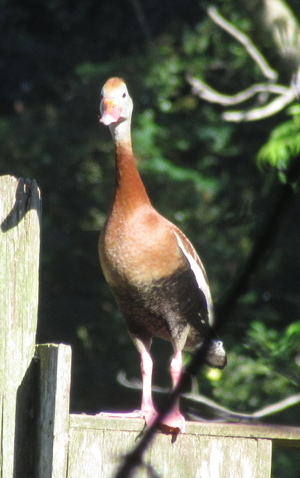 | |
| Anseriformes | Anatidae | Oxyura jamaicensis | Ruddy Duck | 20091227 | US-NC-Mackay Island NWR | 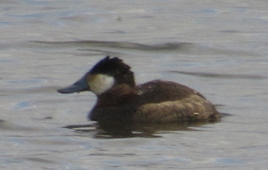 | |
| Anseriformes | Anatidae | Cygnus olor | Mute Swan | 20140816 | CH-ZH-Zurich-Blatterwiese | 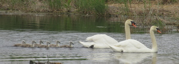 | |
| Anseriformes | Anatidae | Cygnus columbianus | Tundra Swan | 20091227 | US-NC-Mackay Island NWR | (no image yet!) | |
| Anseriformes | Anatidae | Cygnus cygnus | Whooper Swan | 20150101 | CH-TG-Ermatinger Becken | 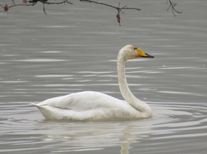 | |
| Anseriformes | Anatidae | Cygnus buccinator | Trumpeter Swan | 20121230 | US-WA-Seattle-Union Bay | 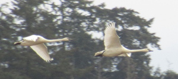 | |
| Anseriformes | Anatidae | Branta bernicla | Brant Goose | 20100411 | US-WA-Seattle-Alki Beach | 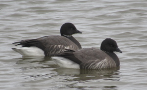 | |
| Anseriformes | Anatidae | Branta canadensis | Canada Goose | 20091114 | US-WA-Skagit Wildlife Management Area | 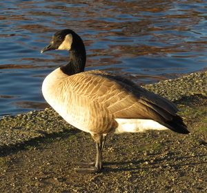 | |
| Anseriformes | Anatidae | Branta leucopsis | Barnacle Goose | 20201122 | UK-NFK-Norwich-Whitlingham Country Park | 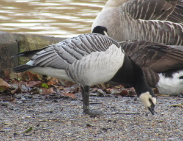 | |
| Anseriformes | Anatidae | Branta hutchinsii | Cackling Goose | 20130222 | US-WA-Seattle-University of Washington | 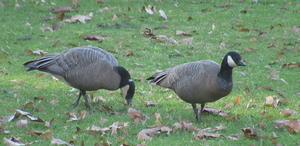 | |
| Anseriformes | Anatidae | Anser caerulescens | Snow Goose | 20091114 | US-WA-Skagit Wildlife Management Area | 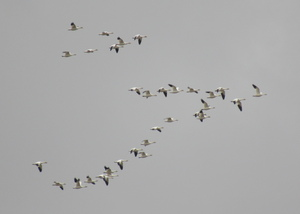 | |
| Anseriformes | Anatidae | Anser anser | Greylag Goose | 20140830 | CH-SZ-Frauenwinkel | 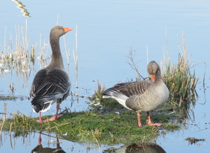 | |
| Anseriformes | Anatidae | Anser erythropus | Lesser White-fronted Goose | 20250315 | UK-NFK-Cley Marshes NWT | 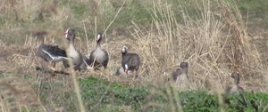 | |
| Anseriformes | Anatidae | Anser albifrons | Greater White-fronted Goose | 20181108 | CA-BC-Vancouver-Stanley Park | | |
| Anseriformes | Anatidae | Anser serrirostris | Tundra Bean Goose | 20251130 | UK-NFK-Buckenham Marshes RSPB | 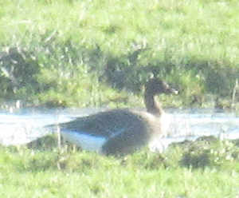 | |
| Anseriformes | Anatidae | Anser brachyrhynchus | Pink-footed Goose | 20201011 | UK-NFK-Buckenham Marshes RSPB | 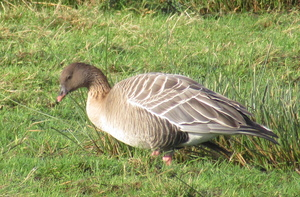 | |
| Anseriformes | Anatidae | Cairina moschata | Muscovy Duck | 20180505 | PA-Colon-Gamboa-Sendero La Chunga | 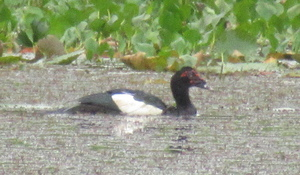 | |
| Anseriformes | Anatidae | Aix galericulata | Mandarin Duck | 20201122 | UK-NFK-Norwich-Whitlingham Country Park | Non-native range only | 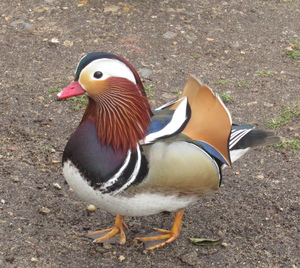 |
| Anseriformes | Anatidae | Aix sponsa | Wood Duck | 20091109 | US-WA-Seattle-Union Bay | 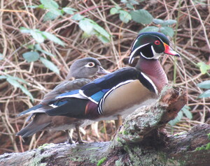 | |
| Anseriformes | Anatidae | Alopochen aegyptiaca | Egyptian Goose | 20141116 | CH-SG-Rapperswil Holzbruecke | Non-native range only | 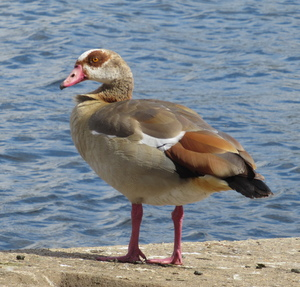 |
| Anseriformes | Anatidae | Tadorna tadorna | Common Shelduck | 20150403 | CH-AG-Klingnauer Stausee | 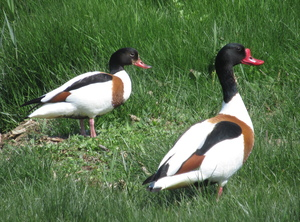 | |
| Anseriformes | Anatidae | Tadorna ferruginea | Ruddy Shelduck | 20140920 | CH-AG-Klingnauer Stausee | Non-native range only | 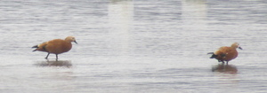 |
| Anseriformes | Anatidae | Somateria mollissima | Common Eider | 20140830 | CH-SZ-Frauenwinkel | 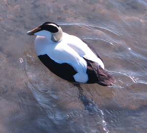 | |
| Anseriformes | Anatidae | Histrionicus histrionicus | Harlequin Duck | 20090307 | US-WA-San Juan-Lime Kiln Point SP | 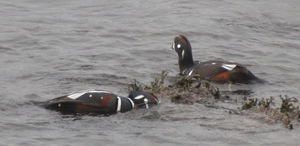 | |
| Anseriformes | Anatidae | Melanitta nigra | Common Scoter | 20230407 | UK-NFK-Titchwell Marsh RSPB | 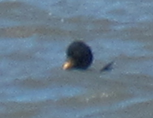 | |
| Anseriformes | Anatidae | Melanitta americana | Black Scoter | 20160322 | US-VA-Back Bay NWR | (no image yet!) | |
| Anseriformes | Anatidae | Melanitta perspicillata | Surf Scoter | 20091101 | US-WA-Saltwater SP | 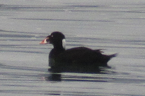 | |
| Anseriformes | Anatidae | Melanitta fusca | Velvet Scoter | 20241109 | UK-NFK-Cley Marshes NWT | (no image yet!) | |
| Anseriformes | Anatidae | Melanitta deglandi | White-winged Scoter | 20111125 | US-WA-Seattle-Discovery Park | (no image yet!) | |
| Anseriformes | Anatidae | Bucephala albeola | Bufflehead | 20091101 | US-WA-Dash Point Park | 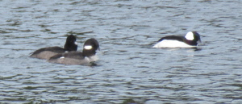 | |
| Anseriformes | Anatidae | Bucephala islandica | Barrow's Goldeneye | 20181108 | CA-BC-Vancouver-Stanley Park | 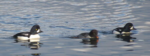 | |
| Anseriformes | Anatidae | Bucephala clangula | Common Goldeneye | 20091114 | US-WA-Anacortes | 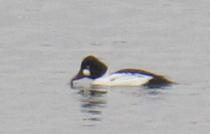 | |
| Anseriformes | Anatidae | Lophodytes cucullatus | Hooded Merganser | 20091109 | US-WA-Seattle-Union Bay | 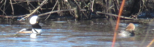 | |
| Anseriformes | Anatidae | Mergus serrator | Red-breasted Merganser | 20131225 | US-WA-Nisqually NWR | 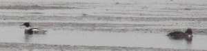 | |
| Anseriformes | Anatidae | Mergus merganser | Common Merganser | 20091114 | US-WA-Skagit Wildlife Management Area | 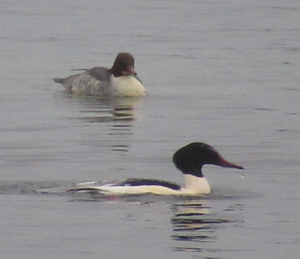 | |
| Anseriformes | Anatidae | Netta rufina | Red-crested Pochard | 20140830 | CH-SZ-Frauenwinkel | 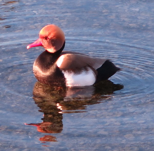 | |
| Anseriformes | Anatidae | Aythya nyroca | Ferruginous Duck | 20150509 | CH-SZ-Frauenwinkel | 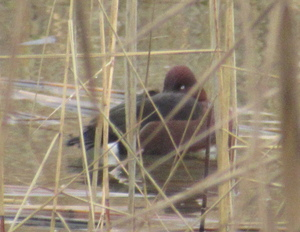 | |
| Anseriformes | Anatidae | Aythya ferina | Common Pochard | 20140830 | CH-SZ-Frauenwinkel | 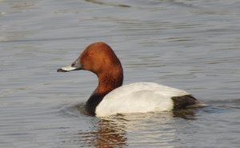 | |
| Anseriformes | Anatidae | Aythya valisineria | Canvasback | 20100214 | US-WA-Seattle-Foster and Marsh Islands | | |
| Anseriformes | Anatidae | Aythya collaris | Ring-necked Duck | 20100418 | US-WA-Seattle-Union Bay | 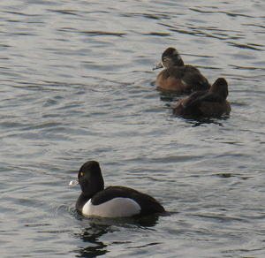 | |
| Anseriformes | Anatidae | Aythya americana | Redhead | 20091227 | US-NC-Mackay Island NWR | (no image yet!) | |
| Anseriformes | Anatidae | Aythya fuligula | Tufted Duck | 20140830 | CH-SZ-Frauenwinkel | 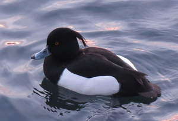 | |
| Anseriformes | Anatidae | Aythya affinis | Lesser Scaup | 20101205 | US-WA-Seattle-Magnuson Park | (no image yet!) | |
| Anseriformes | Anatidae | Aythya marila | Greater Scaup | 20111206 | US-WA-Seattle-Fremont | (no image yet!) | |
| Anseriformes | Anatidae | Spatula querquedula | Garganey | 20150403 | CH-AG-Klingnauer Stausee | (no image yet!) | |
| Anseriformes | Anatidae | Spatula discors | Blue-winged Teal | 20091017 | US-WA-Daroga SP | (no image yet!) | |
| Anseriformes | Anatidae | Spatula cyanoptera | Cinnamon Teal | 20091127 | US-WA-Seattle-Union Bay | | |
| Anseriformes | Anatidae | Spatula clypeata | Northern Shoveler | 20091109 | US-WA-Seattle-Union Bay | 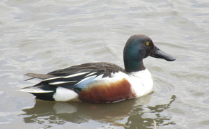 | |
| Anseriformes | Anatidae | Mareca strepera | Gadwall | 20091109 | US-WA-Seattle-Union Bay | 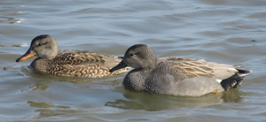 | |
| Anseriformes | Anatidae | Mareca penelope | Eurasian Wigeon | 20091101 | US-WA-Saltwater SP | 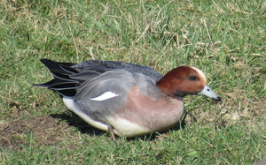 | |
| Anseriformes | Anatidae | Mareca americana | American Wigeon | 20091017 | US-WA-US 97 along Columbia River | 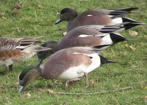 | |
| Anseriformes | Anatidae | Anas platyrhynchos | Mallard | 20091101 | US-WA-Saltwater SP | 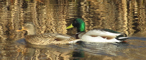 | |
| Anseriformes | Anatidae | Anas rubripes | American Black Duck | 20160313 | US-VA-Virginia Beach-Pleasure House Point | 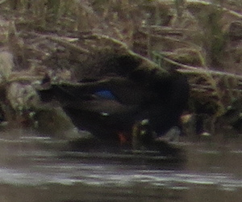 | |
| Anseriformes | Anatidae | Anas fulvigula | Mottled Duck | 20161001 | US-FL-Orlando-Mead Botanical Gardens | 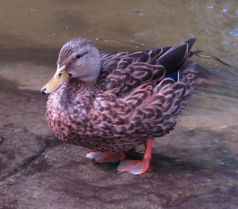 | |
| Anseriformes | Anatidae | Anas acuta | Northern Pintail | 20091101 | US-WA-Nisqually NWR | 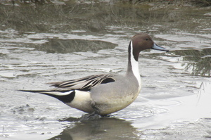 | |
| Anseriformes | Anatidae | Anas crecca | Green-winged Teal | 20091101 | US-WA-Gog-Le-Hi-Te Mitigated Wetlands | 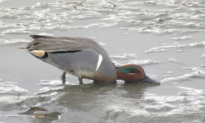 | |
| Galliformes | Cracidae | Ortalis cinereiceps | Grey-headed Chachalaca | 20170429 | PA-Colon-Gamboa | 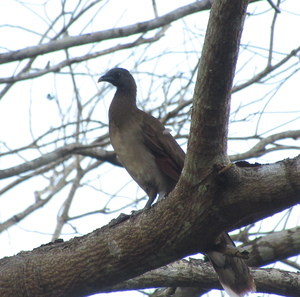 | |
| Galliformes | Odontophoridae | Callipepla californica | California Quail | 20110710 | US-OR-Putnam's Point | (no image yet!) | |
| Galliformes | Phasianidae | Meleagris gallopavo | Wild Turkey | 20111006 | US-CO-Spanish Peaks access road | (no image yet!) | |
| Galliformes | Phasianidae | Bonasa umbellus | Ruffed Grouse | 20130821 | US-WA-Olympic NP-Hoh River | Photo credit Robert Jacobs | 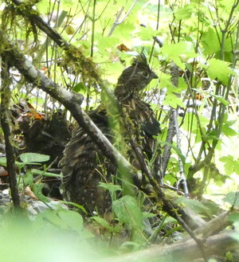 |
| Galliformes | Phasianidae | Dendragapus fuliginosus | Sooty Grouse | 20120921 | US-WA-Mount Rainier NP-Sunset Park | 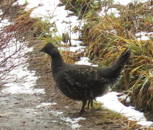 | |
| Galliformes | Phasianidae | Lagopus leucura | White-tailed Ptarmigan | 20110917 | US-CA-Muir Pass | Non-native range only | 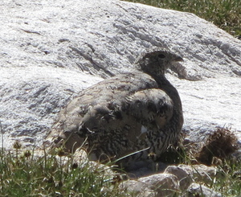 |
| Galliformes | Phasianidae | Perdix perdix | Grey Partridge | 20190504 | UK-SFK-Lakenheath Fen RSPB | 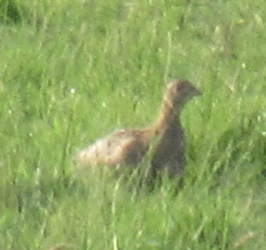 | |
| Galliformes | Phasianidae | Phasianus colchicus | Common Pheasant | 20190831 | US-MT-Lee Metcalf NWR | Non-native range only | |
| Galliformes | Phasianidae | Pavo cristatus | Indian Peafowl | 20250209 | ES-CastillaYLeon-Leon-Parque de Quevedo | Non-native range only | |
| Galliformes | Phasianidae | Alectoris rufa | Red-legged Partridge | 20170318 | UK-CBG-Fen Drayton Lakes RSPB | ||
| Phoenicopteriformes | Phoenicopteridae | Phoenicopterus roseus | Greater Flamingo | 20180817 | FR-PAC-Camargue-Parc Ornithologique du Pont de Gau | ||
| Phoenicopteriformes | Phoenicopteridae | Phoenicopterus ruber | American Flamingo | 199702xx | Bonaire-salt flats | (no image yet!) | |
| Podicipediformes | Podicipedidae | Tachybaptus ruficollis | Little Grebe | 20140830 | CH-SZ-Frauenwinkel | ||
| Podicipediformes | Podicipedidae | Podilymbus podiceps | Pied-billed Grebe | 20091017 | US-WA-Alta Lake SP | ||
| Podicipediformes | Podicipedidae | Podiceps auritus | Horned Grebe | 20091101 | US-WA-Saltwater SP | ||
| Podicipediformes | Podicipedidae | Podiceps grisegena | Red-necked Grebe | 20091101 | US-WA-Dash Point Park | ||
| Podicipediformes | Podicipedidae | Podiceps cristatus | Great Crested Grebe | 20140817 | CH-ZH-Zurich-Seedfeldquai | ||
| Podicipediformes | Podicipedidae | Podiceps nigricollis | Black-necked Grebe | 20110710 | US-CA-Tule Lake NWR | (no photo yet!) | |
| Podicipediformes | Podicipedidae | Aechmophorus occidentalis | Western Grebe | 20091017 | US-WA-Daroga SP | (no photo yet!) | |
| Podicipediformes | Podicipedidae | Aechmophorus clarkii | Clark's Grebe | 20110710 | US-OR-Putnam's Point | (no photo yet!) | |
| Cuculiformes | Cuculidae | Crotophaga major | Greater Ani | 20170924 | PA-Colon-Gamboa-Gamboa Rainforest Resort | ||
| Cuculiformes | Cuculidae | Crotophaga ani | Smooth-billed Ani | 20170527 | PA-Colon-Gamboa-Pipeline Road | ||
| Cuculiformes | Cuculidae | Piaya cayana | Common Squirrel Cuckoo | 20170429 | PA-Colon-Gamboa | ||
| Cuculiformes | Cuculidae | Cuculus canorus | Common Cuckoo | 20180520 | UK-CBG-Fen Drayton Lakes RSPB | (no image yet!) | |
| Columbiformes | Columbidae | Columbina minuta | Plain-breasted Ground Dove | 20170924 | PA-Colon-Gamboa-Gamboa Rainforest Resort | ||
| Columbiformes | Columbidae | Columbina talpacoti | Ruddy Ground Dove | 20170429 | PA-Colon-Gamboa | ||
| Columbiformes | Columbidae | Leptotila verreauxi | White-tipped Dove | 20170527 | PA-Colon-Gamboa-Pipeline Road | ||
| Columbiformes | Columbidae | Leptotila cassinii | Grey-chested Dove | 20180317 | PA-Colon-Gamboa-Pipeline Road | ||
| Columbiformes | Columbidae | Zenaida asiatica | White-winged Dove | 20110516 | US-TX-Houston-Mulberry St. | (no image yet!) | |
| Columbiformes | Columbidae | Zenaida macroura | Mourning Dove | 20091227 | US-NC-Mackay Island NWR | ||
| Columbiformes | Columbidae | Patagioenas cayennensis | Pale-vented Pigeon | 20170429 | PA-Colon-Gamboa | ||
| Columbiformes | Columbidae | Patagioenas speciosa | Scaled Pigeon | 20190305 | PA-Colon-Gamboa-Rainforest Discovery Center | ||
| Columbiformes | Columbidae | Patagioenas fasciata | Band-tailed Pigeon | 20190911 | US-WA-Mount Rainier NP-Spray Park | (no image yet!) | |
| Columbiformes | Columbidae | Streptopelia decaocto | Eurasian Collared Dove | 20140830 | CH-ZH-Zurich-Botanischer Garten | ||
| Columbiformes | Columbidae | Columba palumbus | Common Wood Pigeon | 20140814 | CH-ZH-Zurich-Botanischer Garten | ||
| Columbiformes | Columbidae | Columba livia | Rock Dove | 20180529 | UK-CBG-Stourbridge Common | Unclear if feral or not (probably yes) | |
| Columbiformes | Columbidae | Columba oenas | Stock Dove | 20170409 | UK-CBG-Fen Drayton Lakes RSPB | ||
| Gruiformes | Gruidae | Antigone canadensis | Sandhill Crane | 20190831 | US-MT-Lee Metcalf NWR | (no image yet!) | |
| Gruiformes | Gruidae | Grus americana | Whooping Crane | 199xxxxx | US-TX-Olancho | (no image yet!) | |
| Gruiformes | Gruidae | Grus grus | Common Crane | 20220604 | UK-NFK-Strumpshaw Fen RSPB | (no image yet!) | |
| Gruiformes | Rallidae | Aramides cajaneus | Grey-cowled Wood Rail | 20170804 | PA-Colon-Gamboa-Ammo Dump Ponds | ||
| Gruiformes | Rallidae | Rallus limicola | Virginia Rail | 20210602 | US-WA-Seattle-Union Bay | ||
| Gruiformes | Rallidae | Rallus aquaticus | Water Rail | 20160403 | CH-AG-Klingnauer Stausee | ||
| Gruiformes | Rallidae | Porzana carolina | Sora | 20140112 | US-TX-Brazos Bend SP | ||
| Gruiformes | Rallidae | Gallinula chloropus | Common Moorhen | 20141116 | CH-SG-Rapperswil-Holzbrueke | ||
| Gruiformes | Rallidae | Gallinula galeata | Common Gallinule | 20140112 | US-TX-Brazos Bend SP | ||
| Gruiformes | Rallidae | Fulica atra | Eurasian Coot | 20140816 | CH-ZH-Zurich-Seedfeldquai | | |
| Gruiformes | Rallidae | Fulica americana | American Coot | 20091017 | US-WA-Columbia River along US 97 | ||
| Gruiformes | Rallidae | Porphyrio martinica | Purple Gallinule | 20170527 | PA-Colon-Gamboa-Pipeline Road | ||
| Gruiformes | Rallidae | Laterallus albigularis | White-throated Crake | 20190303 | PA-Colon-Gamboa-Ammo Dump Ponds | ||
| Charadriiformes | Recurvirostridae | Recurvirostra avosetta | Pied Avocet | 20180817 | FR-PAC-Camargue-Parc Ornithologique du Pont de Gau | ||
| Charadriiformes | Recurvirostridae | Recurvirostra americana | American Avocet | 20110924 | US-CA-Palo Alto Baylands | ||
| Charadriiformes | Recurvirostridae | Himantopus mexicanus | Black-necked Stilt | 20110924 | US-CA-Palo Alto Baylands | ||
| Charadriiformes | Recurvirostridae | Himantopus himantopus | Black-winged Stilt | 20180817 | FR-PAC-Camargue-Parc Ornithologique du Pont de Gau | ||
| Charadriiformes | Haematopodidae | Haematopus bachmani | Black Oystercatcher | 20120704 | US-WA-San Juan-San Juan County Park | (no image yet!) | |
| Charadriiformes | Haematopodidae | Haematopus ostralegus | Eurasian Oystercatcher | 20170318 | UK-CBG-Fen Drayton Lakes RSPB | ||
| Charadriiformes | Charadriidae | Pluvialis squatarola | Grey Plover | 20091114 | US-WA-Skagit-Skagit Wildlife Area | ||
| Charadriiformes | Charadriidae | Pluvialis apricaria | European Golden Plover | 20220326 | UK-NFK-Titchwell Marsh RSPB | ||
| Charadriiformes | Charadriidae | Pluvialis dominica | American Golden Plover | 20230826 | UK-NFK-Titchwell Marsh RSPB | ||
| Charadriiformes | Charadriidae | Charadrius vociferus | Killdeer | 20091114 | US-WA-Skagit-Skagit Wildlife Area | ||
| Charadriiformes | Charadriidae | Charadrius hiaticula | Common Ringed Plover | 20150430 | DE-BW-Neuenberg am Rhein-Rheingaerten | ||
| Charadriiformes | Charadriidae | Thinornis dubius | Little Ringed Plover | 20180817 | FR-PAC-Camargue-Parc Ornithologique du Pont de Gau | ||
| Charadriiformes | Charadriidae | Vanellus vanellus | Northern Lapwing | 20150509 | CH-SZ-Frauenwinkel | ||
| Charadriiformes | Charadriidae | Vanellus chilensis | Southern Lapwing | 20180502 | PA-Colon-Gamboa | ||
| Charadriiformes | Charadriidae | Anarhynchus nivosus | Snowy Plover | 20120130 | US-CA-San Buenaventura SB | ||
| Charadriiformes | Jacanidae | Jacana jacana | Wattled Jacana | 20170429 | PA-Colon-Gamboa | ||
| Charadriiformes | Scolopacidae | Numenius hudsonicus | Hudsonian Whimbrel | 20120130 | US-CA-San Buenaventura SB | (no image yet!)/td> | |
| Charadriiformes | Scolopacidae | Numenius phaeopus | Eurasian Whimbrel | 20160403 | CH-AG-Klingnauer Stausee | (no image yet!) | |
| Charadriiformes | Scolopacidae | Numenius americanus | Long-billed Curlew | 20110924 | US-CA-Palo Alto Baylands | ||
| Charadriiformes | Scolopacidae | Numenius arquata | Eurasian Curlew | 20140920 | CH-AG-Klingnauer Stausee | | |
| Charadriiformes | Scolopacidae | Limosa lapponica | Bar-tailed Godwit | 20230519 | UK-NFK-Titchwell Marsh RSPB | ||
| Charadriiformes | Scolopacidae | Limosa limosa | Black-tailed Godwit | 20180817 | FR-PAC-Camargue-Parc Ornithologique du Pont de Gau | ||
| Charadriiformes | Scolopacidae | Limosa fedoa | Marbled Godwit | 20110924 | US-CA-Canvasback Way | ||
| Charadriiformes | Scolopacidae | Limnodromus scolopaceus | Long-billed Dowitcher | 20091114 | US-WA-Skagit-Skagit Wildlife Area | ||
| Charadriiformes | Scolopacidae | Lymnocryptes minimus | Jack Snipe | 20250302 | UK-NFK-Titchwell Marsh RSPB | ||
| Charadriiformes | Scolopacidae | Gallinago delicata | Wilson's Snipe | 20140112 | US-TX-Brazos Bend SP | (no image yet!) | |
| Charadriiformes | Scolopacidae | Gallinago gallinago | Common Snipe | 20141019 | CH-ZH-Neeracherried | ||
| Charadriiformes | Scolopacidae | Actitis hypoleucos | Common Sandpiper | 20180817 | FR-PAC-Camargue-Parc Ornithologique du Pont de Gau | ||
| Charadriiformes | Scolopacidae | Actitis macularius | Spotted Sandpiper | 20170910 | PA-Colon-Gamboa-Gamboa Rainforest Resort | ||
| Charadriiformes | Scolopacidae | Phalaropus lobatus | Red-necked Phalarope | 20250914 | UK-NFK-Titchwell Marsh RSPB | ||
| Charadriiformes | Scolopacidae | Tringa ochropus | Green Sandpiper | 20150403 | CH-AG-Klingnauer Stausee | ||
| Charadriiformes | Scolopacidae | Tringa solitaria | Solitary Sandpiper | 20190901 | US-MT-Ninepipes NWR | (no image yet!) | |
| Charadriiformes | Scolopacidae | Tringa stagnatilis | Marsh Sandpiper | 20180817 | FR-PAC-Camargue-Parc Ornithologique du Pont de Gau | ||
| Charadriiformes | Scolopacidae | Tringa glareola | Wood Sandpiper | 20160821 | CH-AG-Klingnauer Stausee | (no image yet!) | |
| Charadriiformes | Scolopacidae | Tringa totanus | Common Redshank | 20150403 | CH-AG-Klingnauer Stausee | ||
| Charadriiformes | Scolopacidae | Tringa flavipes | Lesser Yellowlegs | 20110924 | US-CA-Palo Alto Baylands | ||
| Charadriiformes | Scolopacidae | Tringa semipalmata | Willet | 20110924 | US-CA-Palo Alto Baylands | ||
| Charadriiformes | Scolopacidae | Tringa erythropus | Spotted Redshank | 20141019 | CH-ZH-Neeracherried | ||
| Charadriiformes | Scolopacidae | Tringa nebularia | Common Greenshank | 20180817 | FR-PAC-Camargue-Parc Ornithologique du Pont de Gau | ||
| Charadriiformes | Scolopacidae | Tringa melanoleuca | Greater Yellowlegs | 20241019 | US-WA-Skagit-Skagit Wildlife Area | ||
| Charadriiformes | Scolopacidae | Arenaria interpres | Ruddy Turnstone | 20201212 | UK-SFK-Lowestoft-Ness Point | ||
| Charadriiformes | Scolopacidae | Calidris canutus | Red Knot | 20210905 | UK-NFK-Buckenham Marshes RSPB | ||
| Charadriiformes | Scolopacidae | Calidris pugnax | Ruff | 20150411 | CH-AG-Klingnauer Stausee | ||
| Charadriiformes | Scolopacidae | Calidris ferruginea | Curlew Sandpiper | 20230917 | UK-NFK-Cley Marshes NWT | ||
| Charadriiformes | Scolopacidae | Calidris alba | Sanderling | 20120130 | US-CA-San Buenaventura SB | ||
| Charadriiformes | Scolopacidae | Calidris alpina | Dunlin | 20091114 | US-WA-Skagit-Skagit Wildlife Area | ||
| Charadriiformes | Scolopacidae | Calidris maritima | Purple Sandpiper | 20201212 | UK-SFK-Lowestoft-Ness Point | ||
| Charadriiformes | Scolopacidae | Calidris mauri | Western Sandpiper | 20110924 | US-CA-Palo Alto Baylands | (no image yet!) | |
| Charadriiformes | Scolopacidae | Calidris minuta | Little Stint | 20230520 | UK-NFK-Cley Marshes NWT | ||
| Charadriiformes | Scolopacidae | Calidris minutilla | Least Sandpiper | 20100425 | US-WA-Seattle-Union Bay | (no image yet!) | |
| Charadriiformes | Scolopacidae | Calidris fuscicollis | White-rumped Sandpiper | 20240831 | UK-NFK-Titchwell Marsh RSPB | ||
| Charadriiformes | Alcidae | Brachyramphus marmoratus | Marbled Murrelet | 20091114 | US-WA-Anacortes-Washington Park | (no image yet!) | |
| Charadriiformes | Alcidae | Cepphus columba | Pigeon Guillemot | 20110713 | US-CA-Mendocino Coast Botanical Gardens | ||
| Charadriiformes | Alcidae | Alca torda | Razorbill | 20231028 | UK-NFK-Titchwell Marsh RSPB | ||
| Charadriiformes | Alcidae | Uria aalge | Common Murre | 20091114 | US-WA-Anacortes-Washington Park | ||
| Charadriiformes | Laridae | Rynchops niger | Black Skimmer | 20160311 | US-VA-Virginia Beach-Lynnhaven Inlet Flats | (no image yet!) | |
| Charadriiformes | Laridae | Sternula albifrons | Little Tern | 20180817 | FR-PAC-Camargue-Parc Ornithologique du Pont de Gau | ||
| Charadriiformes | Laridae | Hydroprogne caspia | Caspian Tern | 20100719 | US-OR-Arlington-Columbia River | (no image yet!) | |
| Charadriiformes | Laridae | Gelochelidon nilotica | Gull-billed Tern | 20180817 | FR-PAC-Camargue-Parc Ornithologique du Pont de Gau | ||
| Charadriiformes | Laridae | Thalasseus sandvicensis | Sandwich Tern | 20220326 | UK-NFK-Titchwell Marsh RSPB | ||
| Charadriiformes | Laridae | Thalasseus maximus | Royal Tern | 20240529 | US-VA-Back Bay NWR | (no image yet!) | |
| Charadriiformes | Laridae | Sterna forsteri | Forster's Tern | 20110710 | US-OR-Putnam's Point | (no image yet!) | |
| Charadriiformes | Laridae | Sterna hirundo | Common Tern | 20130829 | US-MA-Hingham-Planter's Hill | ||
| Charadriiformes | Laridae | Hydrocoloeus minutus | Little Gull | 20140920 | CH-AG-Klingnauer Stausee | ||
| Charadriiformes | Laridae | Rissa tridactyla | Black-legged Kittiwake | 20240514 | UK-SFK-Minsmere RSPB | ||
| Charadriiformes | Laridae | Chroicocephalus philadelphia | Bonaparte's Gull | 20110903 | US-WA-Port Townsend Marine Science Center | ||
| Charadriiformes | Laridae | Chroicocephalus ridibundus | Black-headed Gull | 20140816 | CH-ZH-Zurich-Seedfeldquai | ||
| Charadriiformes | Laridae | Leucophaeus atricilla | Laughing Gull | 20130829 | US-MA-Hingham-Planter's Hill | (no image yet!) | |
| Charadriiformes | Laridae | Ichthyaetus melanocephalus | Mediterranean Gull | 20220326 | UK-NFK-Titchwell Marsh RSPB | ||
| Charadriiformes | Laridae | Larus heermanni | Heermann's Gull | 20110903 | US-WA-Port Townsend Marine Science Center | ||
| Charadriiformes | Laridae | Larus delawarensis | Ring-billed Gull | 20091101 | US-WA-Saltwater SP | ||
| Charadriiformes | Laridae | Larus brachyrhynchus | Short-billed Gull | 20091101 | US-WA-Saltwater SP | ||
| Charadriiformes | Laridae | Larus canus | Common Gull | 20140920 | CH-AG-Klingnauer Stausee | ||
| Charadriiformes | Laridae | Larus occidentalis | Western Gull | 20110712 | US-CA-Noyo | ||
| Charadriiformes | Laridae | Larus cachinnans | Caspian Gull | 20150101 | CH-TG-Ermatinger Becken | (no image yet!) | |
| Charadriiformes | Laridae | Larus smithsonianus | American Herring Gull | 20091101 | US-WA-Gog-Le-Hi-Te Mitigated Wetlands | ||
| Charadriiformes | Laridae | Larus argentatus | European Herring Gull | 20170318 | UK-CBG-Fen Drayton Lakes RSPB | ||
| Charadriiformes | Laridae | Larus michahellis | Yellow-legged Gull | 20140830 | CH-SZ-Frauenwinkel | ||
| Charadriiformes | Laridae | Larus marinus | Great Black-backed Gull | 20120301 | US-VA-Virginia Beach-Lynnhaven Inlet Flats | ||
| Charadriiformes | Laridae | Larus fuscus | Lesser Black-backed Gull | 20150507 | NL-NH-Vondelpark | ||
| Charadriiformes | Laridae | Larus californicus | California Gull | 20100418 | US-WA-Seattle-Union Bay | | |
| Charadriiformes | Laridae | Larus glaucescens | Glaucous-winged Gull | 20091101 | US-WA-Kirkland-Costco | ||
| Charadriiformes | Laridae | Larus glaucoides | Iceland Gull | 20101128 | US-WA-Seattle-Green Lake | (no image yet!) | |
| Gaviiformes | Gaviidae | Gavia stellata | Red-throated Loon | 20231028 | UK-NFK-Titchwell Marsh RSPB | | |
| Gaviiformes | Gaviidae | Gavia immer | Common Loon | 20091017 | US-WA-Daroga SP | ||
| Gaviiformes | Gaviidae | Gavia pacifica | Pacific Loon | 20091101 | US-WA-Saltwater SP | ||
| Ciconiiformes | Ciconiidae | Mycteria americana | Wood Stork | 20161001 | US-FL-Orlando-Mead Botanical Gardens | ||
| Ciconiiformes | Ciconiidae | Ciconia ciconia | White Stork | 20140814 | CH-SG-interlake area Zurisee/Walensee | ||
| Suliformes | Fregatidae | Fregata magnificens | Magnificent Frigatebird | 20170429 | PA-Colon-Gamboa-Pipeline Road | ||
| Suliformes | Sulidae | Morus bassanus | Northern Gannet | 20160322 | US-VA-Back Bay NWR | (no image yet!) | |
| Suliformes | Sulidae | Sula leucogaster | Brown Booby | 20190223 | PA-Veraguas-Coiba NP | (no image yet!) | |
| Suliformes | Anhingidae | Anhinga anhinga | Anhinga | 20161001 | US-FL-Orlando-Mead Botanical Gardens | | |
| Suliformes | Phalacrocoracidae | Gulosus aristotelis | European Shag | 20190928 | UK-Wales-Great Orme | (no ima | |
| Suliformes | Phalacrocoracidae | Nannopterum brasilianum | Neotropic Cormorant | 20170514 | PA-Colon-Gamboa | ||
| Suliformes | Phalacrocoracidae | Nannopterum auritum | Double-crested Cormorant | 20091101 | US-WA-Des Moines-Marina | ||
| Suliformes | Phalacrocoracidae | Urile penicillatus | Brandt's Cormorant | 20091114 | US-WA-Anacortes-Washington Park | (no image yet!) | |
| Suliformes | Phalacrocoracidae | Urile pelagicus | Pelagic Cormorant | 20091114 | US-WA-Anacortes-Washington Park | ||
| Suliformes | Phalacrocoracidae | Phalacrocorax carbo | Great Cormorant | 20140830 | CH-SZ-Frauenwinkel | ||
| Pelecaniformes | Threskiornithidae | Eudocimus albus | American White Ibis | 20140112 | US-TX-Brazos Bend SP | ||
| Pelecaniformes | Threskiornithidae | Plegadis falcinellus | Glossy Ibis | 20180817 | FR-PAC-Camargue-Parc Ornithologique du Pont de Gau | ||
| Pelecaniformes | Threskiornithidae | Plegadis chihi | White-faced Ibis | 20130616 | US-CA-Elkhorn Rest Area I-5 | (no image yet!) | |
| Pelecaniformes | Threskiornithidae | Geronticus eremita | Northern Bald Ibis | 20150124 | CH-ZG-Sonnenhof | ||
| Pelecaniformes | Threskiornithidae | Platalea ajaja | Roseate Spoonbill | 20140112 | US-TX-Damon | Photo credit Robert Jacobs | |
| Pelecaniformes | Threskiornithidae | Platalea leucorodia | Eurasian Spoonbill | 20230311 | UK-NFK-Cley Marshes NWT | ||
| Pelecaniformes | Threskiornithidae | Threskiornis aethiopicus | African Sacred Ibis | 20180817 | FR-PAC-Camargue-Parc Ornithologique du Pont de Gau | Non-native range only | |
| Pelecaniformes | Pelecanidae | Pelecanus erythrorhynchos | American White Pelican | 20100719 | US-OR-Arlington-Columbia River | (no image yet!) | |
| Pelecaniformes | Pelecanidae | Pelecanus occidentalis | Brown Pelican | 20110713 | US-CA-Mendocino Coast Botanical Gardens | ||
| Pelecaniformes | Ardeidae | Tigrisoma lineatum | Rufescent Tiger Heron | 20170527 | PA-Colon-Gamboa-Pipeline Road | ||
| Pelecaniformes | Ardeidae | Botaurus stellaris | Eurasian Bittern | 20190126 | UK-CBG-Wicken Fen NNR | ||
| Pelecaniformes | Ardeidae | Botaurus lentiginosus | American Bittern | 20160313 | US-VA-Virginia Beach-Pleasure House Point | Photo credit Robert Jacobs | |
| Pelecaniformes | Ardeidae | Botaurus minutus | Little Bittern | 20250703 | CH-AG-Klingnauer Stausee | (no image yet!) | |
| Pelecaniformes | Ardeidae | Egretta caerulea | Little Blue Heron | 20140112 | US-TX-Brazos Bend SP | ||
| Pelecaniformes | Ardeidae | Egretta tricolor | Tricolored Heron | 20091227 | US-NC-Mackay Island NWR | ||
| Pelecaniformes | Ardeidae | Egretta thula | Snowy Egret | 20100404 | US-MA-Hingham-Planter's Hill | ||
| Pelecaniformes | Ardeidae | Egretta garzetta | Little Egret | 20140920 | CH-AG-Klingnauer Stausee | ||
| Pelecaniformes | Ardeidae | Nyctanassa violacea | Yellow-crowned Night Heron | 20190307 | PA-Panama-Panama City | ||
| Pelecaniformes | Ardeidae | Nycticorax nycticorax | Black-crowned Night Heron | 20140112 | US-TX-Brazos Bend SP | ||
| Pelecaniformes | Ardeidae | Butorides striata | Striated Heron | 20170527 | PA-Colon-Gamboa-Pipeline Road | ||
| Pelecaniformes | Ardeidae | Butorides virescens | Green Heron | 20100801 | US-WA-Issaquah | | |
| Pelecaniformes | Ardeidae | Ardea alba | Great Egret | 20091227 | US-NC-Mackay Island NWR | ||
| Pelecaniformes | Ardeidae | Ardea ibis | Western Cattle Egret | 20180817 | FR-PAC-Camargue-Parc Ornithologique du Pont de Gau | ||
| Pelecaniformes | Ardeidae | Ardea purpurea | Purple Heron | 20240511 | UK-NFK-Cley Marshes NWT | ||
| Pelecaniformes | Ardeidae | Ardea cinerea | Grey Heron | 20140814 | CH-ZH-Zurich-Botanischer Garten | ||
| Pelecaniformes | Ardeidae | Ardea cocoi | Cocoi Heron | 20180301 | PA-Colon-Gamboa-Ammo Dump Ponds | ||
| Pelecaniformes | Ardeidae | Ardea herodias | Great Blue Heron | 20091017 | US-WA-Daroga SP | | |
| Caprimulgiformes | Caprimulgidae | Nyctidromus albicollis | Pauraque | 20170614 | PA-Colon-Gamboa | ||
| Caprimulgiformes | Caprimulgidae | Chordeiles minor | Common Nighthawk | 20100716 | US-OR-Malheur NF | ||
| Nyctibiiformes | Nyctibiidae | Nyctibius grandis | Great Potoo | 20170429 | PA-Colon-Gamboa-Pipeline Road | ||
| Apodiformes | Apodidae | Chaetura spinicaudus | Band-rumped Swift | 20180218 | PA-Colon-Gamboa | (no image yet!) | |
| Apodiformes | Apodidae | Chaetura pelagica | Chimney Swift | 20130828 | US-MA-Somerville | (no image yet!) | |
| Apodiformes | Apodidae | Chaetura vauxi | Vaux's Swift | 20130817 | US-WA-Olympic NP-Hoh River | (no image yet!) | |
| Apodiformes | Apodidae | Chaetura brachyura | Short-tailed Swift | 20170924 | PA-Colon-Gamboa-Gamboa Rainforest Resort | (no image yet!) | |
| Apodiformes | Apodidae | Aeronautes saxatalis | White-throated Swift | 20130619 | US-CA-Yosemite NP-Badger Pass | (no image yet!) | |
| Apodiformes | Apodidae | Panyptila cayennensis | Lesser Swallow-tailed Swift | 20170429 | PA-Colon-Gamboa | (no image yet!) | |
| Apodiformes | Apodidae | Tachymarptis melba | Alpine Swift | 20140817 | CH-ZH-Zurich-Botanischer Garten | (no image yet!) | |
| Apodiformes | Apodidae | Apus apus | Common Swift | 20140814 | CH-ZH-Zurich-Botanischer Garten | (no image yet!) | |
| Apodiformes | Trochilidae | Florisuga mellivora | White-necked Jacobin | 20190305 | PA-Colon-Gamboa-Rainforest Discovery Center | ||
| Apodiformes | Trochilidae | Phaethornis guy | Green Hermit | 20190226 | PA-Chiriqui-Pipeline Trail | (no image yet!) | |
| Apodiformes | Trochilidae | Phaethornis longirostris | Long-billed Hermit | 20170527 | PA-Colon-Gamboa-Pipeline Road | ||
| Apodiformes | Trochilidae | Phaethornis striigularis | Stripe-throated Hermit | 20180325 | PA-Colon-Gamboa-Pipeline Road | (no photo yet!) | |
| Apodiformes | Trochilidae | Heliothryx barroti | Purple-crowned Fairy | 20190305 | PA-Colon-Gamboa-Rainforest Discovery Center | ||
| Apodiformes | Trochilidae | Anthracothorax nigricollis | Black-throated Mango | 20180218 | PA-Colon-Gamboa | ||
| Apodiformes | Trochilidae | Lampornis castaneoventris | White-throated Mountaingem | 20190226 | PA-Chiriqui-Pipeline Trail | (no image yet!) | |
| Apodiformes | Trochilidae | Archilochus colubris | Ruby-throated Hummingbird | 20110427 | US-VA-Virginia Beach-Thoroughgood | (no image yet!) | |
| Apodiformes | Trochilidae | Archilochus alexandri | Black-chinned Hummingbird | 20110713 | US-CA-Mendocino Coast Botanical Gardens | ||
| Apodiformes | Trochilidae | Calypte anna | Anna's Hummingbird | 20100425 | US-WA-Seattle-Union Bay | ||
| Apodiformes | Trochilidae | Calypte costae | Costa's Hummingbird | 20160426 | US-CA-Riverside-UC Riverside | (no image yet!) | |
| Apodiformes | Trochilidae | Selasphorus rufus | Rufous Hummingbird | 20130704 | US-WA-Seattle | (no iage yet!) | |
| Apodiformes | Trochilidae | Selasphorus sasin | Allen's Hummingbird | 20110713 | US-CA-Mendocino Coast Botanical Gardens | ||
| Apodiformes | Trochilidae | Selasphorus scintilla | Scintillant Hummingbird | 20190226 | PA-Chiriqui-Pipeline Trail | Photo credit Robert Jacobs | |
| Apodiformes | Trochilidae | Chlorostilbon assimilis | Garden Emerald | 20170812 | PA-Colon-Gamboa | ||
| Apodiformes | Trochilidae | Chalybura buffonii | White-vented Plumeleteer | 20180325 | PA-Colon-Gamboa-Pipeline Road | ||
| Apodiformes | Trochilidae | Thalurania colombica | Crowned Woodnymph | 20180317 | PA-Colon-Gamboa-Pipeline Road | ||
| Apodiformes | Trochilidae | Saucerottia edward | Snowy-bellied Hummingbird | 20170429 | PA-Colon-Gamboa | ||
| Apodiformes | Trochilidae | Amazilia tzacatl | Rufous-tailed Hummingbird | 20170429 | PA-Colon-Gamboa | ||
| Apodiformes | Trochilidae | Chrysuronia coeruleogularis | Sapphire-throated Hummingbird | 20180218 | PA-Colon-Gamboa-Sendero El Dique | ||
| Apodiformes | Trochilidae | Polyerata amabilis | Blue-chested Hummingbird | 20190305 | PA-Colon-Gamboa-Rainforest Discovery Center | | |
| Apodiformes | Trochilidae | Chlorestes julie | Violet-bellied Hummingbird | 20170514 | PA-Colon-Gamboa | ||
| Strigiformes | Tytonidae | Tyto alba | Western Barn Owl | 20170421 | UK-CBG-Cambridge-Ditton Meadows | (no image yet!) | |
| Strigiformes | Strigidae | Aegolius acadicus | Northern Saw-whet Owl | 20101112 | US-WA-Seattle-University of Washington | ||
| Strigiformes | Strigidae | Athene noctua | Little Owl | 20220619 | UK-NFK-Strumpshaw Fen RSPB | Non-native range only | |
| Strigiformes | Strigidae | Asio flammeus | Short-eared Owl | 20091114 | US-WA-Skagit-Skagit Wildlife Area | | |
| Strigiformes | Strigidae | Asio otus | Long-eared Owl | 20200125 | SE-M-Folkparsvaeen neighborhood | ||
| Strigiformes | Strigidae | Bubo scandiacus | Snowy Owl | 2000xxxx | US-MA-Boston-Logan Airport | (no image yet!) | |
| Strigiformes | Strigidae | Megascops choliba | Tropical Screech Owl | 20170801 | PA-Colon-Gamboa | ||
| Strigiformes | Strigidae | Pulsatrix perspicillata | Spectacled Owl | 20180212 | PA-Colon-Gamboa | (no image yet!) | |
| Strigiformes | Strigidae | Strix aluco | Tawny Owl | 20251213 | UK-NFK-Titchwell Marsh RSPB | ||
| Strigiformes | Strigidae | Strix varia | Barred Owl | 20130122 | US-WA-Seattle-Washington Park Arboretum | ||
| Cathartiformes | Cathartidae | Gymnogyps californianus | California Condor | 20190310 | US-CA-Lake Piru | (no image yet!) | |
| Cathartiformes | Cathartidae | Coragyps atratus | Black Vulture | 20161001 | US-FL-Orlando-Mead Botanical Gardens | ||
| Cathartiformes | Cathartidae | Cathartes aura | Turkey Vulture | 20100716 | US-OR-Malheur NF | ||
| Cathartiformes | Cathartidae | Cathartes burrovianus | Lesser Yellow-headed Vulture | 20190303 | PA-Colon-Gamboa | ||
| Accipitriformes | Pandionidae | Pandion haliaetus | Osprey | 20100528 | US-WA-Seattle-Union Bay | ||
| Accipitriformes | Accipitridae | Elanus leucurus | White-tailed Kite | 20110925 | US-CA-Muir Woods nearby Hwy 1 | ||
| Accipitriformes | Accipitridae | Gyps fulvus | Griffon Vulture | 20250709 | CH-BE-Schynige Platte | (no image yet!) | |
| Accipitriformes | Accipitridae | Aquila chrysaetos | Golden Eagle | 20190310 | US-CA-Lake Piru | ||
| Accipitriformes | Accipitridae | Accipiter striatus | Sharp-shinned Hawk | 20140329 | US-WA-Seattle | ||
| Accipitriformes | Accipitridae | Accipiter nisus | Eurasian Sparrowhawk | 20141224 | CH-AG-Klingnauer Stausee | ||
| Accipitriformes | Accipitridae | Astur cooperii | Cooper's Hawk | 20091114 | US-WA-Skagit-Skagit Wildlife Area | ||
| Accipitriformes | Accipitridae | Astur atricapillus | American Goshawk | 20091017 | US-WA-Columbia River nr Hwy 97 | (no image yet!) | |
| Accipitriformes | Accipitridae | Astur gentilis | Eurasian Goshawk | 20220725 | CH-VS-Chandolin-to-StLuc-Rd | (no image yet!) | |
| Accipitriformes | Accipitridae | Circus cyaneus | Hen Harrier | 20150101 | CH-TG-Ermatinger Becken | (no image yet!) | |
| Accipitriformes | Accipitridae | Circus hudsonius | Northern Harrier | 20091017 | US-WA-Columbia River near Hwy 97 | ||
| Accipitriformes | Accipitridae | Circus aeruginosus | Western Marsh Harrier | 20160403 | CH-AG-Klingnauer Stausee | ||
| Accipitriformes | Accipitridae | Harpagus bidentatus | Double-toothed Kite | 20180304 | PA-Colon-Gamboa-Sendero La Laguna | ||
| Accipitriformes | Accipitridae | Milvus milvus | Red Kite | 20140818 | CH-GR-Churwalden | ||
| Accipitriformes | Accipitridae | Milvus migrans | Black Kite | 20150406 | CH-VD-Centre Nature Birdlife de la Sauge | (no image yet!) | |
| Accipitriformes | Accipitridae | Haliaeetus albicilla | White-tailed Eagle | 20250914 | UK-NFK-Titchwell Marsh RSPB | (no image yet!) | |
| Accipitriformes | Accipitridae | Haliaeetus leucocephalus | Bald Eagle | 20091017 | US-WA-Daroga SP | ||
| Accipitriformes | Accipitridae | Ictinia mississippiensis | Mississippi Kite | 20110622 | US-OK-Norman-University of Oklahoma | ||
| Accipitriformes | Accipitridae | Geranospiza caerulescens | Crane Hawk | 20190303 | PA-Colon-Gamboa-Ammo Dump Ponds | (no image yet!) | |
| Accipitriformes | Accipitridae | Rostrhamus sociabilis | Snail Kite | 20180414 | PA-Colon-Gamboa-Pipeline Road | ||
| Accipitriformes | Accipitridae | Buteogallus anthracinus | Common Black Hawk | 20190223 | PA-Veraguas-Coiba NP | (no image yet!) | |
| Accipitriformes | Accipitridae | Buteogallus urubitinga | Great Black Hawk | 20180301 | PA-Colon-Gamboa-Ammo Dump Ponds | ||
| Accipitriformes | Accipitridae | Rupornis magnirostris | Roadside Hawk | 20170604 | PA-Colon-Gamboa | | |
| Accipitriformes | Accipitridae | Buteo nitidus | Grey-lined Hawk | 20170527 | PA-Colon-Gamboa-Pipeline Road | (no image yet!) | |
| Accipitriformes | Accipitridae | Buteo platypterus | Broad-winged Hawk | 20170924 | PA-Colon-Gamboa-Gamboa Rainforest Resort | ||
| Accipitriformes | Accipitridae | Buteo lineatus | Red-shouldered Hawk | 20120131 | US-CA-Ventura-San Buenaventura SB | ||
| Accipitriformes | Accipitridae | Buteo albonotatus | Zone-tailed Hawk | 20170527 | PA-Colon-Gamboa-Pipeline Road | ||
| Accipitriformes | Accipitridae | Buteo brachyurus | Short-tailed Hawk | 20170812 | PA-Colon-Gamboa | ||
| Accipitriformes | Accipitridae | Buteo swainsoni | Swainson's Hawk | 20190901 | US-MT-Ninepipe NWR | (no image yet!) | |
| Accipitriformes | Accipitridae | Buteo jamaicensis | Red-tailed Hawk | 20091017 | US-WA-Daroga SP | ||
| Accipitriformes | Accipitridae | Buteo regalis | Ferruginous Hawk | 20100719 | US-OR-Along US 26 | (no image yet!) | |
| Accipitriformes | Accipitridae | Buteo lagopus | Rough-legged Buzzard | 20110904 | US-WA-Fort Worden SP | (no image yet!) | |
| Accipitriformes | Accipitridae | Buteo buteo | Common Buzzard | 20140816 | CH-ZH-Zurich-Botanischer Garten | ||
| Trogoniformes | Trogonidae | Pharomachrus mocinno | Resplendent Quetzal | 20190226 | PA-Chiriqui-Pipeline Trail | Photo credit Robert Jacobs | |
| Trogoniformes | Trogonidae | Trogon massena | Slaty-tailed Trogon | 20180317 | PA-Colon-Gamboa-Pipeline Road | ||
| Trogoniformes | Trogonidae | Trogon chionurus | White-tailed Trogon | 20170429 | PA-Colon-Gamboa-Pipeline Road | ||
| Trogoniformes | Trogonidae | Trogon caligatus | Gartered Trogon | 20170812 | PA-Colon-Gamboa | ||
| Trogoniformes | Trogonidae | Trogon collaris | Collared Trogon | 20190226 | PA-Chiriqui-Pipeline Trail | Photo credit Robert Jacobs | |
| Coraciiformes | Meropidae | Merops apiaster | European Bee-eater | 20230715 | UK-NFK-Trimingham Quarry | ||
| Coraciiformes | Momotidae | Electron platyrhynchum | Broad-billed Motmot | 20170527 | PA-Colon-Gamboa-Pipeline Road | ||
| Coraciiformes | Momotidae | Baryphthengus martii | Rufous Motmot | 20170910 | PA-Colon-Gamboa-Gamboa Rainforest Resort | ||
| Coraciiformes | Momotidae | Momotus subrufescens | Whooping Motmot | 20170527 | PA-Colon-Gamboa-Pipeline Road | ||
| Coraciiformes | Alcedinidae | Alcedo atthis | Common Kingfisher | 20140830 | CH-SZ-Frauenwinkel | ||
| Coraciiformes | Alcedinidae | Megaceryle alcyon | Belted Kingfisher | 20091017 | US-WA-Alta Lake SP | ||
| Coraciiformes | Alcedinidae | Megaceryle torquata | Ringed Kingfisher | 20190305 | PA-Colon-Gamboa-Rainforest Discovery Center | (no image yet!) | |
| Coraciiformes | Alcedinidae | Chloroceryle aenea | American Pygmy Kingfisher | 20170924 | PA-Colon-Gamboa-Gamboa Rainforest Resort | (no image yet!) | |
| Galbuliformes | Bucconidae | Malacoptila panamensis | White-whiskered Puffbird | 20170527 | PA-Colon-Gamboa-Pipeline Road | ||
| Galbuliformes | Bucconidae | Notharchus hyperrhynchus | White-necked Puffbird | 20180317 | PA-Colon-Gamboa-Pipeline Road | ||
| Galbuliformes | Bucconidae | Notharchus pectoralis | Black-breasted Puffbird | 20180218 | PA-Colon-Gamboa-Sendero El Dique | ||
| Piciformes | Ramphastidae | Ramphastos ambiguus< | Yellow-throated Toucan | 20170429 | PA-Colon-Gamboa-Pipeline Road | ||
| Piciformes | Ramphastidae | Ramphastos sulfuratus< | Keel-billed Toucan | 20170429 | PA-Colon-Gamboa-Pipeline Road | ||
| Piciformes | Ramphastidae | Pteroglossus torquatus< | Collared Aracari | 20180317 | PA-Colon-Gamboa-Pipeline Road | ||
| Piciformes | Ramphastidae | Aulacorhynchus prasinus< | Northern Emerald Toucanet | 20190226 | PA-Chiriqui-Pipeline Trail | (no image yet!) | |
| Piciformes | Picidae | Picus viridis< | European Green Woodpecker | 20150104 | CH-TG-Seetaucherstrecke | ||
| Piciformes | Picidae | Dryocopus pileatus< | Pileated Woodpecker | 20110814 | US-WA-Little Si | (no image yet!) | |
| Piciformes | Picidae | Dryocopus lineatus< | Lineated Woodpecker | 20180505 | PA-Colon-Gamboa-Gamboa Rainforest Resort | ||
| Piciformes | Picidae | Celeus loricatus | Cinnamon Woodpecker | 20180325 | PA-Colon-Gamboa-Pipeline Road | ||
| Piciformes | Picidae | Colaptes auratus | Northern Flicker | 20091017 | US-WA-Camas Meadows | ||
| Piciformes | Picidae | Campephilus melanoleucos | Crimson-crested Woodpecker | 20180414 | PA-Colon-Gamboa-Pipeline Road | ||
| Piciformes | Picidae | Sphyrapicus varius | Yellow-bellied Sapsucker | 20160319 | US-NC-Sarah P. Duke Gardens | (no image yet!) | |
| Piciformes | Picidae | Sphyrapicus nuchalis | Red-naped Sapsucker | 20111004 | US-CO-Spanish Peaks dikes | (no image yet!) | |
| Piciformes | Picidae | Sphyrapicus ruber | Red-breasted Sapsucker | 20101128 | US-WA-Seattle-Green Lake | ||
| Piciformes | Picidae | Melanerpes formicivorus | Acorn Woodpecker | 20110713 | US-CA-Mendocino Coast Botanical Gardens | ||
| Piciformes | Picidae | Melanerpes rubricapillus | Red-crowned Woodpecker | 20170429 | PA-Colon-Gamboa | ||
| Piciformes | Picidae | Melanerpes carolinus | Red-bellied Woodpecker | 20120301 | US-VA-Virginia Beach-Thoroughgood | ||
| Piciformes | Picidae | Dendrocopos major | Great Spotted Woodpecker | 20141009 | CH-GR-Preda-Bahnhof | ||
| Piciformes | Picidae | Dryobates pubescens | Downy Woodpecker | 20091101 | US-WA-Saltwater SP | ||
| Piciformes | Picidae | Leuconotopicus villosus | Hairy Woodpecker | 20091017 | US-WA-Camas Meadows | ||
| Piciformes | Picidae | Leuconotopicus albolarvatus | White-headed Woodpecker | 20110920 | US-CA-Mammoth Lakes-Minaret Road | (no image yet!) | |
| Falconiformes | Falconidae | Caracara plancus | Crested Caracara | 20170519 | PA-Colon-Barro Colorado Island | (no image yet!) | |
| Falconiformes | Falconidae | Daptrius chimachima | Yellow-headed Caracara | 20170604 | PA-Colon-Gamboa | ||
| Falconiformes | Falconidae | Falco tinnunculus | Common Kestrel | 20141019 | CH-ZH-Neeracherried | ||
| Falconiformes | Falconidae | Falco sparverius | American Kestrel | 20091114 | US-WA-Anacortes-Washington Park | ||
| Falconiformes | Falconidae | Falco columbarius | Merlin | 20091101 | US-WA-Nisqually NWR | (no image yet!) | |
| Falconiformes | Falconidae | Falco rufigularis | Bat Falcon | 20170910 | PA-Colon-Gamboa-Gamboa Rainforest Resort | (no image yet!) | |
| Falconiformes | Falconidae | Falco subbuteo | Eurasian Hobby | 20160821 | CH-AG-Klingnauer Stausee | (no image yet!) | |
| Falconiformes | Falconidae | Falco mexicanus | Prairie Falcon | 20120927 | US-WA-Rainier NP-Sunrise | (no image yet!) | |
| Falconiformes | Falconidae | Falco peregrinus | Peregrine Falcon | 20110206 | US-WA-Seattle-Foster and Marsh Islands | ||
| Psittaciformes | Psittacidae | Myiopsitta monachus | Monk Parakeet | 20250823 | ES-CT-Barcelona-Park Guell | Non-native range only | |
| Psittaciformes | Psittacidae | Brotogeris jugularis | Orange-chinned Parakeet | 20170429 | PA-Colon-Gamboa-Pipeline Road | ||
| Psittaciformes | Psittacidae | Amazona autumnalis | Red-lored Amazon | 20180325 | PA-Colon-Gamboa-Pipeline Road | ||
| Psittaciformes | Psittacidae | Amazona ochrocephala | Yellow-crowned Amazon | 20170718 | PA-PA-Panama City | ||
| Psittaciformes | Psittacidae | Amazona farinosa | Mealy Amazon | 20170527 | PA-Colon-Gamboa-Pipeline Road | (no image yet!) | |
| Psittaciformes | Psittacidae | Psittacara mitratus | Mitred Parakeet | 20250823 | ES-CT-Barcelona-Park Guell | Non-native range only | (no image yet!) |
| Psittaciformes | Psittaculidae | Psittacula krameri | Rose-ringed Parakeet | 20141213 | FR-HDF-Lille-Citadel de Lille | Non-native range only | |
| Passeriformes | Pipridae | Lepidothrix velutina | Velvety Manakin | 20170910 | PA-Colon-Gamboa-Camino al Teleferico | (no image yet!) | |
| Passeriformes | Pipridae | Lepidothrix coronata | Blue-capped Manakin | 20170720 | PA-Colon-Gamboa-Gamboa-??? | ||
| Passeriformes | Pipridae | Manacus vitellinus | Golden-collared Manakin | 20170903 | PA-Colon-Gamboa | ||
| Passeriformes | Pipridae | Ceratopipra mentalis | Red-capped Manakin | 20170924 | PA-Colon-Gamboa-Sendero El Dique | ||
| Passeriformes | Cotingidae | Querula purpurata | Purple-throated Fruitcrow | 20180505 | PA-Colon-Gamboa-Sendero La Chunga | (no image yet!) | |
| Passeriformes | Cotingidae | Lipaugus unirufus | Rufous Piha | 20180325 | PA-Colon-Gamboa-Pipeline Road | (no image yet!) | |
| Passeriformes | Tityridae | Schiffornis stenorhyncha | Russet-winged Schiffornis | 20170924 | PA-Colon-Gamboa-Sendero El Dique | ||
| Passeriformes | Tityridae | Tityra inquisitor | Black-crowned Tityra | 20170429 | PA-Colon-Gamboa | ||
| Passeriformes | Tityridae | Tityra semifasciata | Masked Tityra | 20170429 | PA-Colon-Gamboa-Pipeline Road | ||
| Passeriformes | Onychorhynchidae | Terenotriccus erythrurus | Ruddy-tailed Flycatcher | 20170527 | PA-Colon-Gamboa-Pipeline Road | (no image yet!) | |
| Passeriformes | Tyrannidae | Mionectes oleagineus | Ochre-bellied Flycatcher | 20180414 | PA-Colon-Gamboa-Pipeline Road | | |
| Passeriformes | Tyrannidae | Phylloscartes flavovirens | Panama Tyrannulet | 20170910 | PA-Colon-Gamboa-Camino al Teleferico | (no image yet!) | |
| Passeriformes | Tyrannidae | Rhynchocyclus aequinoctialis | Western Olivaceous Flatbill | 20180325 | PA-Colon-Gamboa-Pipeline Road | (no image yet!) | |
| Passeriformes | Tyrannidae | Tolmomyias sulphurescens | Yellow-olive Flatbill | 20180414 | PA-Colon-Gamboa-Pipeline Road | ||
| Passeriformes | Tyrannidae | Tolmomyias flavotectus | Yellow-winged Flatbill | 20180218 | PA-Colon-Gamboa-Sendero El Dique | (no image yet!) | |
| Passeriformes | Tyrannidae | Todirostrum cinereum | Common Tody-Flycatcher | 20170604 | PA-Colon-Gamboa | ||
| Passeriformes | Tyrannidae | Poecilotriccus sylvia | Slaty-headed Tody-Flycatcher | 20180502 | PA-Colon-Gamboa | ||
| Passeriformes | Tyrannidae | Myiornis atricapillus | Black-capped Pygmy Tyrant | 20180317 | PA-Colon-Gamboa-Pipeline Road | (no image yet!) | |
| Passeriformes | Tyrannidae | Oncostoma olivaceum | Southern Bentbill | 20180325 | PA-Colon-Gamboa-Pipeline Road | ||
| Passeriformes | Tyrannidae | Zimmerius vilissimus | Guatemalan Tyrannulet | 20170610 | PA-Colon-Gamboa-??? | | |
| Passeriformes | Tyrannidae | Zimmerius parvus | Mistletoe Tyrannulet | 20180325 | PA-Colon-Gamboa-Pipeline Road | (no image yet!) | |
| Passeriformes | Tyrannidae | Ornithion brunneicapillus | Brown-capped Tyrannulet | 20180414 | PA-Colon-Gamboa-Pipeline Road | ||
| Passeriformes | Tyrannidae | Camptostoma obsoletum | Southern Beardless Tyrannulet | 20170903 | PA-Colon-Gamboa | ||
| Passeriformes | Tyrannidae | Myiopagis gaimardii | Forest Elaenia | 20180317 | PA-Colon-Gamboa-Pipeline Road | (no image yet!) | |
| Passeriformes | Tyrannidae | Elaenia flavogaster | Yellow-bellied Elaenia | 20170604 | PA-Colon-Gamboa | ||
| Passeriformes | Tyrannidae | Elaenia chiriquensis | Lesser Elaenia | 20190302 | PA-Colon-Gamboa-Camino al Teleferico | ||
| Passeriformes | Tyrannidae | Capsiempis flaveola | Yellow Tyrannulet | 20170429 | PA-Colon-Gamboa | (no image yet!) | |
| Passeriformes | Tyrannidae | Myiarchus tuberculifer | Dusky-capped Flycatcher | 20170910 | PA-Colon-Gamboa-Camino al Teleferico | ||
| Passeriformes | Tyrannidae | Myiarchus panamensis | Panama Flycatcher | 20170429 | PA-Colon-Gamboa | ||
| Passeriformes | Tyrannidae | Myiarchus cinerascens | Ash-throated Flycatcher | 20110711 | US-CA-Sacramento NWR | ||
| Passeriformes | Tyrannidae | Myiarchus crinitus | Great Crested Flycatcher | 20240526 | US-VA-Virginia Beach-Thoroughgood | ||
| Passeriformes | Tyrannidae | Legatus leucophaius | Piratic Flycatcher | 20180209 | PA-Colon-Gamboa | ||
| Passeriformes | Tyrannidae | Philohydor lictor | Lesser Kiskadee | 20170429 | PA-Colon-Gamboa | ||
| Passeriformes | Tyrannidae | Pitangus sulphuratus | Great Kiskadee | 20170429 | PA-Colon-Gamboa | ||
| Passeriformes | Tyrannidae | Myiozetetes cayanensis | Rusty-margined Flycatcher | 20170429 | PA-Colon-Gamboa | ||
| Passeriformes | Tyrannidae | Myiozetetes similis | Social Flycatcher | 20170429 | PA-Colon-Gamboa | ||
| Passeriformes | Tyrannidae | Myiodynastes maculatus | Streaked Flycatcher | 20170429 | PA-Colon-Gamboa | ||
| Passeriformes | Tyrannidae | Myiodynastes luteiventris | Sulphur-bellied Flycatcher | 20170910 | PA-Colon-Gamboa-Camino al Teleferico | (no image yet!) | |
| Passeriformes | Tyrannidae | Megarynchus pitangua | Boat-billed Flycatcher | 20170514 | PA-Colon-Gamboa | ||
| Passeriformes | Tyrannidae | Tyrannus savana | Fork-tailed Flycatcher | 20170514 | PA-Colon-Gamboa | ||
| Passeriformes | Tyrannidae | Tyrannus melancholicus | Tropical Kingbird | 20170429 | PA-Colon-Gamboa | | |
| Passeriformes | Tyrannidae | Tyrannus tyrannus | Eastern Kingbird | 20180325 | PA-Colon-Gamboa-Pipeline Road | ||
| Passeriformes | Tyrannidae | Tyrannus vociferans | Cassin's Kingbird | 20190310 | US-CA-Lake Piru | (no image yet!) | |
| Passeriformes | Tyrannidae | Tyrannus forficatus | Scissor-tailed Flycatcher | 20110621 | US-OR-Norman-Norman Conference Center | (no image yet!) | |
| Passeriformes | Tyrannidae | Tyrannus verticalis | Western Kingbird | 20100719 | US-OR-Along US 26 | ||
| Passeriformes | Tyrannidae | Sayornis saya | Say's Phoebe | 20110825 | US-WA-Colockum Research Unit of WSU | ||
| Passeriformes | Tyrannidae | Sayornis phoebe | Eastern Phoebe | 20130830 | US-MA-Camp Kinderland | (no image yet!) | |
| Passeriformes | Tyrannidae | Sayornis nigricans | Black Phoebe | 20140129 | US-CA-Ventura-San Buenaventura SB | ||
| Passeriformes | Tyrannidae | Empidonax virescens | Acadian Flycatcher | 20170922 | PA-Colon-Gamboa-??? | ||
| Passeriformes | Tyrannidae | Empidonax traillii | Willow Flycatcher | 20170704 | US-WA-Nisqually NWR | (no image yet!) | |
| Passeriformes | Tyrannidae | Empidonax flavescens | Yellowish Flycatcher | 20190226 | PA-Chiriqui-Pipeline Trail | Photo credit Robert Jacobs | |
| Passeriformes | Tyrannidae | Empidonax difficilis | Western Flycatcher | 20230812 | US-WA-Snoqualmie WA-Stillwater | Photo credit Robert Jacobs | |
| Passeriformes | Tyrannidae | Empidonax minimus | Least Flycatcher | 20140114 | US-TX-Houston-Hermann Park | (no image yet!) | |
| Passeriformes | Tyrannidae | Mitrephanes phaeocercus | Northern Tufted Flycatcher | 20190226 | PA-Chiriqui-Pipeline Trail | (no image yet!) | |
| Passeriformes | Tyrannidae | Contopus cooperi | Olive-sided Flycatcher | 20130625 | US-UT-Snowbird-Little Cottonwood Canyon | (no image yet!) | |
| Passeriformes | Tyrannidae | Contopus sordidulus | Western Wood Pewee | 20120520 | US-WA-Colockum Research Unit of WSU | (no image yet!) | |
| Passeriformes | Tyrannidae | Contopus bogotensis | Northern Tropical Pewee | 20170924 | PA-Colon-Gamboa-Camino al Teleferico | (no image yet!) | |
| Passeriformes | Tyrannidae | Contopus virens | Eastern Wood Pewee | 20110516 | US-TX-Houston-Southhampton | ||
| Passeriformes | Thamnophilidae | Microrhopias quixensis | Dot-winged Antwren | 20170429 | PA-Colon-Gamboa-Pipeline Road | ||
| Passeriformes | Thamnophilidae | Epinecrophylla fulviventris | Checker-throated Stipplethroat | 20180506 | PA-Colon-Gamboa-Sendero El Dique | (no image yet!) | |
| Passeriformes | Thamnophilidae | Myrmotherula axillaris | White-flanked Antwren | 20180317 | PA-Colon-Gamboa-Pipeline Road | ||
| Passeriformes | Thamnophilidae | Myrmotherula schisticolor | Slaty Antwren | 20190226 | PA-Chiriqui-Pipeline Trail | (no image yet!) | |
| Passeriformes | Thamnophilidae | Cymbilaimus lineatus | Fasciated Antshrike | 20170910 | PA-Colon-Gamboa-Camino al Teleferico | ||
| Passeriformes | Thamnophilidae | Thamnophilus doliatus | Barred Antshrike | 20170429 | PA-Colon-Gamboa-Pipeline Road | ||
| Passeriformes | Thamnophilidae | TThamnophilus atrinucha | Black-crowned Antshrike | 20170429 | PA-Colon-Gamboa-Pipeline Road | ||
| Passeriformes | Thamnophilidae | Phaenostictus mcleannani | Ocellated Antbird | 20180325 | PA-Colon-Gamboa-Pipeline Road | ||
| Passeriformes | Thamnophilidae | Gymnopithys bicolor | Bicolored Antbird | 20180228 | PA-Colon-Gamboa-forest along Avenue Omar Torrijos Herrera | ||
| Passeriformes | Thamnophilidae | Cercomacra nigricans | Jet Antbird | 20180304 | PA-Colon-Gamboa-Sendero La Laguna | (no image yet!) | |
| Passeriformes | Thamnophilidae | Poliocrania exsul | Chestnut-backed Antbird | 20180304 | PA-Colon-Gamboa-Sendero La Laguna | ||
| Passeriformes | Thamnophilidae | Hylophylax naevioides | Spotted Antbird | 20180325 | PA-Colon-Gamboa-Pipeline Road | ||
| Passeriformes | Thamnophilidae | Myrmeciza longipes | White-bellied Antbird | 20180304 | PA-Colon-Gamboa-Sendero La Laguna | (no image yet!) | |
| Passeriformes | Formicariidae | Formicarius analis | Black-faced Antthrush | 20180414 | PA-Colon-Gamboa-Pipeline Road | (no image yet!) | |
| Passeriformes | Furnariidae | Dendrocincla fuliginosa | Plain-brown Woodcreeper | 20180228 | PA-Colon-Gamboa-forest along Avenue Omar Torrijos Herrera | ||
| Passeriformes | Furnariidae | Dendrocolaptes sanctithomae | Northern Barred Woodcreeper | 20180228 | PA-Colon-Gamboa-forest along Avenue Omar Torrijos Herrera | ||
| Passeriformes | Furnariidae | Xiphorhynchus susurrans | Cocoa Woodcreeper | 20170514 | PA-Colon-Gamboa | ||
| Passeriformes | Furnariidae | Xiphorhynchus lachrymosus | Black-striped Woodcreeper | 20180325 | PA-Colon-Gamboa-Pipeline Road | ||
| Passeriformes | Furnariidae | Lepidocolaptes souleyetii | Streak-headed Woodcreeper | 20180304 | PA-Colon-Gamboa-Sendero La Laguna | ||
| Passeriformes | Furnariidae | Xenops mexicanus | Northern Plain Xenops | 20180228 | PA-Colon-Gamboa-forest along Avenue Omar Torrijos Herrera | ||
| Passeriformes | Furnariidae | Thripadectes rufobrunneus | Streak-breasted Treehunter | 20190226 | PA-Chiriqui-Pipeline Trail | (no image yet!) | |
| Passeriformes | Furnariidae | Synallaxis brachyura | Slaty Spinetail | 20190226 | PA-Chiriqui-Pipeline Trail | (no image yet!) | |
| Passeriformes | Vireonidae | Hylophilus flavipes | Scrub Greenlet | 20170924 | PA-Colon-Gamboa-Camino al Teleferico | ||
| Passeriformes | Vireonidae | Vireolanius pulchellus | Green Shrike-Vireo | 20180429 | PA-Colon-Gamboa-Pipeline Road | (no image yet!) | |
| Passeriformes | Vireonidae | Pachysylvia decurtata | Lesser Greenlet | 20180414 | PA-Colon-Gamboa-Pipeline Road | ||
| Passeriformes | Vireonidae | Pachysylvia aurantiifrons | Golden-fronted Greenlet | 20180505 | PA-Colon-Gamboa-Sendero La Chunga | (no image yet!) | |
| Passeriformes | Vireonidae | Vireo gilvus | Warbling Vireo | 20220629 | US-OH-Cleveland-Gordon Park-Lakefront Reservation | ||
| Passeriformes | Vireonidae | Vireo leucophrys | Brown-capped Vireo | 20190226 | PA-Chiriqui-Pipeline Trail | (no image yet!) | |
| Passeriformes | Vireonidae | Vireo olivaceus | Red-eyed Vireo | 20161001 | US-FL-Orlando-Mead Botanical Gardens | (no image yet!) | |
| Passeriformes | Vireonidae | Vireo solitarius | Blue-headed Vireo | 20140112 | US-TX-Brazos Bend SP | (no image yet!) | |
| Passeriformes | Vireonidae | Vireo griseus | White-eyed Vireo | 20161001 | US-FL-Orlando-Mead Botanical Gardens | (no image yet!) | |
| Passeriformes | Laniidae | Lanius excubitor | Great Grey Shrike | 20141129 | CH-SG-Walsenweg Amden to Quinten | (no image yet!) | |
| Passeriformes | Laniidae | Lanius ludovicianus | Loggerhead Shrike | 20190313 | US-CA-Ventura-San Buenaventura SB | ||
| Passeriformes | Laniidae | Lanius borealis | Northern Shrike | 20091114 | US-WA-Skagit Wildlife Area-Wiley Slough | (no image yet!) | |
| Passeriformes | Corvidae | Pyrrhocorax graculus | Alpine Chough | 20141102 | CH-OW-Pilatus | ||
| Passeriformes | Corvidae | Perisoreus canadensis | Canada Jay | 20091017 | US-WA-Okanogan-Washington Pass | ||
| Passeriformes | Corvidae | Cyanocitta cristata | Blue Jay | 20110516 | US-TX-Houston-Mulberry St | ||
| Passeriformes | Corvidae | Cyanocitta stelleri | Steller's Jay | 20100722 | US-WA-Mount Rainier NP-Longmire | ||
| Passeriformes | Corvidae | Aphelocoma californica | California Scrub Jay | 20101129 | US-WA-Seattle-Union Bay | ||
| Passeriformes | Corvidae | Cyanocorax affinis | Black-chested Jay | 20170429 | PA-Colon-Gamboa-Pipeline Road | (no images yet!) | |
| Passeriformes | Corvidae | Garrulus glandarius | Eurasian Jay | 20140824 | CH-GR-Preda-Bahnhof | ||
| Passeriformes | Corvidae | Pica pica | Eurasian Magpie | 20140920 | CH-AG-Klingnauer Stausee | ||
| Passeriformes | Corvidae | Pica hudsonia | Black-billed Magpie | 20091017 | US-WA-Columbia River-US 97 | ||
| Passeriformes | Corvidae | Nucifraga columbiana | Clark's Nutcracker | 20110709 | US-OR-Crater Lake NP-The Watchman | ||
| Passeriformes | Corvidae | Nucifraga caryocatactes | Northern Nutcracker | 20140818 | CH-GR-Davos Dorf | ||
| Passeriformes | Corvidae | Coloeus monedula | Western Jackdaw | 20150507 | NL-NH-Vondelpark | ||
| Passeriformes | Corvidae | Corvus ossifragus | Fish Crow | 20120305 | US-VA-Norfolk-Norfolk Botanical Gardens | ||
| Passeriformes | Corvidae | Corvus frugilegus | Rook | 20161225 | CH-AG-Klingnauer Stausee | ||
| Passeriformes | Corvidae | Corvus corax | Northern Raven | 20091017 | US-WA-Camas Meadows | ||
| Passeriformes | Corvidae | Corvus brachyrhynchos | American Crow | 20091129 | US-WA-Seattle-Union Bay | ||
| Passeriformes | Corvidae | Corvus corone | Carrion Crow | 20140814 | CH-ZH-Zurich-Botanischer Garten | ||
| Passeriformes | Paridae | Cyanistes caeruleus | Eurasian Blue Tit | 20140817 | CH-ZH-Zurich-Universitaetsspital Park | ||
| Passeriformes | Paridae | Parus major | Great Tit | 20140816 | CH-ZH-Zurich-Botanischer Garten | ||
| Passeriformes | Paridae | Periparus ater | Coal Tit | 20150418 | CH-ZH-Uetliberg | (no image yet!) | |
| Passeriformes | Paridae | Lophophanes cristatus | Crested Tit | 20140817 | CH-ZH-Zurich-Universitaetsspital Park | ||
| Passeriformes | Paridae | Baeolophus bicolor | Tufted Titmouse | 20100404 | US-MA-Hingham-Planter's Hill | ||
| Passeriformes | Paridae | Poecile palustris | Marsh Tit | 20141129 | CH-SG-Walsenweg Amden to Quinten | ||
| Passeriformes | Paridae | Poecile montanus | Willow Tit | 20140818 | CH-GR-Davos Dorf | ||
| Passeriformes | Paridae | Poecile rufescens | Chestnut-backed Chickadee | 20100722 | US-WA-Mount Rainier NP-Longmire | ||
| Passeriformes | Paridae | Poecile gambeli | Mountain Chickadee | 20100805 | US-CA-Yosemite NP-Tenaya Lake | ||
| Passeriformes | Paridae | Poecile carolinensis | Carolina Chickadee | 20120301 | US-VA-Virginia Beach-Pleasure House Point | ||
| Passeriformes | Paridae | Poecile atricapillus | Black-capped Chickadee | 20091017 | US-WA-Camas Meadows | ||
| Passeriformes | Panuridae | Panurus biarmicus | Bearded Reedling | 20150406 | CH-VD-Fanel-Centre Birdlife de la Sauge | ||
| Passeriformes | Alaudidae | Alauda arvensis | Eurasian Skylark | 20201011 | UK-NFK-Buckenham Marshes RSPB | ||
| Passeriformes | Acrocephalidae | Acrocephalus schoenobaenus | Sedge Warbler | 20190504 | UK-CBG-Lakenheath Fen RSPB | ||
| Passeriformes | Acrocephalidae | Acrocephalus palustris | Marsh Warbler | 20250703 | CH-AG-Klingnauer Stausee | (no image yet!) | |
| Passeriformes | Acrocephalidae | Acrocephalus scirpaceus | Common Reed Warbler | 20171008 | UK-CBG-Fen Drayton Lakes RSPB | ||
| Passeriformes | Locustellidae | Locustella luscinioides | Savi's Warbler | 20180817 | FR-PAC-Camargue-Parc Ornithologique du Pont de Gau | (no image yet!) | |
| Passeriformes | Locustellidae | Locustella naevia | Common Grasshopper Warbler | 20180827 | UK-CBG-Milton Country Park | (no image yet!) | |
| Passeriformes | Hirundinidae | Riparia riparia | Sand Martin | 20160821 | CH-AG-Klingnauer Stausee | ||
| Passeriformes | Hirundinidae | Tachycineta bicolor | Tree Swallow | 20100418 | US-WA-Seattle-Union Bay | ||
| Passeriformes | Hirundinidae | Tachycineta albilinea | Mangrove Swallow | 20170514 | PA-Colon-Gamboa | ||
| Passeriformes | Hirundinidae | Tachycineta thalassina | Violet-green Swallow | 20100425 | US-WA-Seattle-Union Bay | ||
| Passeriformes | Hirundinidae | Progne subis | Purple Martin | 20210602 | US-WA-Seattle-Union Bay | ||
| Passeriformes | Hirundinidae | Progne chalybea | Grey-breasted Martin | 20170527 | PA-Colon-Gamboa-Pipeline Road | ||
| Passeriformes | Hirundinidae | Stelgidopteryx ruficollis | Southern Rough-winged Swallow | 20170429 | PA-Colon-Gamboa | ||
| Passeriformes | Hirundinidae | Stelgidopteryx serripennis | Northern Rough-winged Swallow | 20170924 | PA-Colon-Gamboa-Camino al Teleferico | ||
| Passeriformes | Hirundinidae | Pygochelidon cyanoleuca | Blue-and-white Swallow | 20190225 | PA-Chiriqui-Boquete | (no image yet!) | |
| Passeriformes | Hirundinidae | Ptyonoprogne rupestris | Eurasian Crag Martin | 20150906 | CH-VS-Alpe de Chandolin | (no image yet!) | |
| Passeriformes | Hirundinidae | Hirundo rustica | Barn Swallow | 20100418 | US-WA-Seattle-Union Bay | ||
| Passeriformes | Hirundinidae | Delichon urbicum | Western House Martin | 20140825 | CH-GR-Kueblis-Bahnhof | (no image yet!) | |
| Passeriformes | Hirundinidae | Petrochelidon pyrrhonota | American Cliff Swallow | 20100719 | US-OR-John Day Fossil Beds NM-Sheep Rock unit | ||
| Passeriformes | Hirundinidae | Petrochelidon fulva | Cave Swallow | early childhood | US-NM-Carlsbad Caverns NP | (no image yet!) | |
| Passeriformes | Aegithalidae | Psaltriparus minimus | American Bushtit | 20100418 | US-WA-Seattle-Union Bay | ||
| Passeriformes | Aegithalidae | Aegithalos caudatus | Long-tailed Tit | 20141129 | CH-SG-Walsenweg Amden to Quinten | ||
| Passeriformes | Cettiidae | Cettia cetti | Cetti's Warbler | 20190504 | UK-CBG-Lakenheath Fen RSPB | ||
| Passeriformes | Phylloscopidae | Phylloscopus trochilus | Willow Warbler | 20140920 | CH-AG-Klingnauer Stausee | ||
| Passeriformes | Phylloscopidae | Phylloscopus collybita | Common Chiffchaff | 20141129 | CH-SG-Walsenweg Amden to Quinten | ||
| Passeriformes | Sylviidae | Sylvia borin | Garden Warbler | 20150606 | CH-ZH-Zurich-Hohenklingenstrasse | (no image yet!) | |
| Passeriformes | Sylviidae | Sylvia atricapilla | Eurasian Blackcap | 20150406 | CH-VD-Fanel-Centre Nature Birdlife de La Sauge | ||
| Passeriformes | Sylviidae | Curruca curruca | Lesser Whitethroat | 20180603 | UK-CBG-Fen Drayton Lakes RSPB | (no image yet!) | |
| Passeriformes | Sylviidae | Curruca communis | Common Whitethroat | 20180520 | UK-CBG-Fen Drayton Lakes RSPB | ||
| Passeriformes | Bombycillidae | Bombycilla cedrorum | Cedar Waxwing | 20100425 | US-WA-Seattle-Union Bay | ||
| Passeriformes | Bombycillidae | Bombycilla garrulus | Bohemian Waxwing | 20240108 | UK-NFK-Norwich-JIC | ||
| Passeriformes | Ptiliogonatidae | Ptiliogonys caudatus | Long-tailed Silky-flycatcher | 20190226 | PA-Chiriqui-Pipeline Trail | (no image yet!) | |
| Passeriformes | Regulidae | Corthylio calendula | Ruby-crowned Kinglet | 20091101 | US-WA-Saltwater SP | ||
| Passeriformes | Regulidae | Regulus ignicapilla | Common Firecrest | 20140817 | CH-ZH-Zurich-Universitaetsspital Park | ||
| Passeriformes | Regulidae | Regulus satrapa | Golden-crowned Kinglet | 20091101 | US-WA-Paradise Valley Conservation Area | ||
| Passeriformes | Regulidae | Regulus regulus | Goldcrest | 20141102 | CH-OW-Pilatus | | |
| Passeriformes | Sittidae | Sitta carolinensis | White-breasted Nuthatch | 20120304 | US-VA-Virginia Beach-Thoroughgood | ||
| Passeriformes | Sittidae | Sitta pygmaea | Pygmy Nuthatch | 20091017 | US-WA-Camas Meadows | ||
| Passeriformes | Sittidae | Sitta pusilla | Brown-headed Nuthatch | 20211228 | US-VA-Virginia Beach-First Landing SP boat ramp | (no image yet!) | |
| Passeriformes | Sittidae | Sitta canadensis | Red-breasted Nuthatch | 20091017 | US-WA-Camas Meadows | (no image yet!) | |
| Passeriformes | Sittidae | Sitta europaea | Eurasian Nuthatch | 20140901 | CH-ZH-Zurich-Botanischer Garten | ||
| Passeriformes | Certhiidae | Certhia familiaris | Eurasian Treecreeper | 20180827 | UK-CBG-Milton Country Park | ||
| Passeriformes | Certhiidae | Certhia brachydactyla | Short-toed Treecreeper | 20150104 | CH-TG-Seetaucherstrecke | ||
| Passeriformes | Certhiidae | Certhia americana | Brown Creeper | 20100801 | US-WA-Issaquah | ||
| Passeriformes | Polioptilidae | Ramphocaenus melanurus | Trilling Gnatwren | 20180414 | PA-Colon-Gamboa-Pipeline Road | (no image yet!) | |
| Passeriformes | Polioptilidae | Polioptila bilineata | White-browed Gnatcatcher | 20180429 | PA-Colon-Gamboa-Pipeline Road | (no image yet!) | |
| Passeriformes | Polioptilidae | Polioptila caerulea | Blue-grey Gnatcatcher | 20161001 | US-FL-Orlando-Mead Botanical Gardens | ||
| Passeriformes | Troglodytidae | Thryothorus ludovicianus | Carolina Wren | 20110501 | US-NC-Sarah P. Duke Botanical Gardens | ||
| Passeriformes | Troglodytidae | Thryomanes bewickii | Bewick's Wren | 20091109 | US-WA-Seattle-Union Bay | | |
| Passeriformes | Troglodytidae | Cistothorus palustris | Marsh Wren | 20091017 | US-WA-Alta Lake SP | ||
| Passeriformes | Troglodytidae | Troglodytes aedon | Northern House Wren | 20110710 | US-CA-Tule Lake NWR | (no image yet!) | |
| Passeriformes | Troglodytidae | Troglodytes musculus | Southern House Wren | 20170429 | PA-Colon-Gamboa | ||
| Passeriformes | Troglodytidae | Troglodytes troglodytes | Eurasian Wren | 20141128 | CH-ZH-Zurich-Botanischer Garten | ||
| Passeriformes | Troglodytidae | Troglodytes pacificus | Pacific Wren | 20091101 | US-WA-Paradise Valley Conservation Area | (no image yet!) | |
| Passeriformes | Troglodytidae | Pheugopedius fasciatoventris | Black-bellied Wren | 20180414 | PA-Colon-Gamboa-Pipeline Road | (no image yet!) | |
| Passeriformes | Troglodytidae | Pheugopedius rutilus | Rufous-breasted Wren | 20180429 | PA-Colon-Gamboa-Pipeline Road | (no image yet!) | |
| Passeriformes | Troglodytidae | Cantorchilus elutus | Isthmian Wren | 20170514 | PA-Colon-Gamboa | ||
| Passeriformes | Troglodytidae | Cantorchilus leucotis | Buff-breasted Wren | 20170903 | PA-Colon-Gamboa | ||
| Passeriformes | Troglodytidae | Henicorhina leucophrys | Grey-breasted Wood Wren | 20190226 | PA-Chiriqui-Pipeline Trail | (no image yet!) | |
| Passeriformes | Troglodytidae | Cyphorhinus phaeocephalus | Song Wren | 20180317 | PA-Colon-Gamboa-Pipeline Road | (no image yet!) | |
| Passeriformes | Mimidae | Dumetella carolinensis | Grey Catbird | 20110429 | US-NC-Duke University | ||
| Passeriformes | Mimidae | Toxostoma rufum | Brown Thrasher | 20110621 | US-OK-Norman-University of Oklahoma | ||
| Passeriformes | Mimidae | Mimus gilvus | Tropical Mockingbird | 20170429 | PA-Colon-Gamboa | Non-native range only | |
| Passeriformes | Mimidae | Mimus polyglottos | Northern Mockingbird | 20110516 | US-TX-Houston-Mulberry St | | |
| Passeriformes | Sturnidae | Sturnus unicolor | Spotless Starling | 20250207 | ES-CL-Leon-University of Leon | ||
| Passeriformes | Sturnidae | Sturnus vulgaris | Common Starling | 20140830 | CH-SZ-Frauenwinkel | ||
| Passeriformes | Cinclidae | Cinclus cinclus | White-throated Dipper | 20150322 | CH-ZH-Zurich-Dolder | ||
| Passeriformes | Cinclidae | Cinclus mexicanus | American Dipper | 20120924 | US-WA-Mount Rainier NP-Spray Park | ||
| Passeriformes | Turdidae | Sialia sialis | Eastern Bluebird | 20130830 | US-MA-Camp Kinderland | ||
| Passeriformes | Turdidae | Sialia mexicana | Western Bluebird | 20190310 | US-CA-Lake Piru | ||
| Passeriformes | Turdidae | Sialia currucoides | Mountain Bluebird | 20111003 | US-CO-Spanish Peaks road | (no image yet!) | |
| Passeriformes | Turdidae | Myadestes townsendi | Townsend's Solitaire | 20111004 | US-CO-Spanish Peaks dike | (no image yet!) | |
| Passeriformes | Turdidae | Myadestes melanops | Black-faced Solitaire | 20190226 | PA-Chiriqui-Pipeline Trail | (no image yet!) | |
| Passeriformes | Turdidae | Ixoreus naevius | Varied Thrush | 20091114 | US-WA-Skagit Wildlife Area-Wiley Slough | Photo credit Robert Jacobs | |
| Passeriformes | Turdidae | Catharus ustulatus | Swainson's Thrush | 20110715 | US-OR-Cape Perpetua-Devil's Churn | ||
| Passeriformes | Turdidae | Catharus guttatus | Hermit Thrush | 20091101 | US-WA-Paradise Valley Conservation Area | ||
| Passeriformes | Turdidae | Turdus viscivorus | Mistle Thrush | 20141003 | CH-SZ-Rigi Kulm | ||
| Passeriformes | Turdidae | Turdus philomelos | Song Thrush | 20150313 | CH-ZH-Uetliberg | (no image yet!) | |
| Passeriformes | Turdidae | Turdus iliacus | Redwing | 20160117 | CH-TG-Seetaucherstrecke | ||
| Passeriformes | Turdidae | Turdus merula | Common Blackbird | 20140817 | CH-ZH-Zurich-Universitaetsspital Park | ||
| Passeriformes | Turdidae | Turdus pilaris | Fieldfare | 20150406 | CH-VD-Fanel-Centre Nature Birdlife de La Sauge | ||
| Passeriformes | Turdidae | Turdus torquatus | Ring Ouzel | 20220430 | UK-NFK-Titchwell Marsh RSPB | ||
| Passeriformes | Turdidae | Turdus migratorius | American Robin | 20091017 | US-WA-Camas Meadows | ||
| Passeriformes | Turdidae | Turdus assimilis | White-throated Thrush | 20190225 | PA-Chiriqui-Boquete | (no image yet!) | |
| Passeriformes | Turdidae | Turdus grayi | Clay-colored Thrush | 20170429 | PA-Colon-Gamboa | ||
| Passeriformes | Muscicapidae | Muscicapa striata | Spotted Flycatcher | 20140830 | CH-SZ-Frauenwinkel | (no image yet!) | |
| Passeriformes | Muscicapidae | Erithacus rubecula</td> | European Robin | 20140901 | CH-ZH-Zurich-Botanischer Garten | ||
| Passeriformes | Muscicapidae | Phoenicurus ochruros | Black Redstart | 20140907 | CH-ZH-Zurich-Hard | ||
| Passeriformes | Muscicapidae | Phoenicurus phoenicurus | Common Redstart | 20140817 | CH-ZH-Zurich-Universitaetsspital Park | (no image yet!) | |
| Passeriformes | Muscicapidae | Saxicola rubicola | European Stonechat | 20191027 | UK-CBG-Fen Drayton Lakes RSPB | ||
| Passeriformes | Muscicapidae | Oenanthe oenanthe | Northern Wheatear | 201507xx | IT-Suedtirol-Seiser Alm-Puflatsch | ||
| Passeriformes | Prunellidae | Prunella collaris | Alpine Accentor | 20141001 | CH-SZ-Rigi Kulm | (no image yet!) | |
| Passeriformes | Prunellidae | Prunella modularis | Dunnock | 20151024 | CH-SG-Rapperswil-Holzbrueke | ||
| Passeriformes | Passeridae | Montifringilla nivalis | White-winged Snowfinch | 20170201 | CH-VS-Zermatt-Gornergrat | ||
| Passeriformes | Passeridae | Passer montanus | Eurasian Tree Sparrow | 20141129 | CH-SG-Walsenweg Amden to Quinten | | |
| Passeriformes | Passeridae | Passer italiae | Italian Sparrow | 20170218 | IT-Barga-Gallicano | ||
| Passeriformes | Passeridae | Passer domesticus | House Sparrow | 20140816 | CH-ZH-Zurich-Seefeldquai | ||
| Passeriformes | Motacillidae | Motacilla cinerea | Grey Wagtail | 20141019 | CH-ZH-Neeracherried | | |
| Passeriformes | Motacillidae | Motacilla flava | Western Yellow Wagtail | 20230508 | UK-NFK-Titchwell Marsh RSPB | | |
| Passeriformes | Motacillidae | Motacilla alba | White Wagtail | 20140824 | CH-GR-Preda-Bahnhof | ||
| Passeriformes | Motacillidae | Anthus pratensis | Meadow Pipit | 20150101 | CH-TG-Ermatinger Becken | ||
| Passeriformes | Motacillidae | Anthus petrosus | European Rock Pipit | 20201212 | UK-SFK-Lowestoft-Ness Point | ||
| Passeriformes | Motacillidae | Anthus spinoletta | Water Pipit | 20160117 | CH-TG-Seetaucherstrecke | ||
| Passeriformes | Fringillidae | Fringilla montifringilla | Brambling | 20201017 | UK-NFK-Strumpshaw Fen RSPB | ||
| Passeriformes | Fringillidae | Fringilla coelebs | Eurasian Chaffinch | 20140909 | CH-GL-Vorauen | ||
| Passeriformes | Fringillidae | Chlorophonia elegantissima | Elegant Euphonia | 20190226 | PA-Chiriqui-Pipeline Trail | (no image yet!) | |
| Passeriformes | Fringillidae | Euphonia luteicapilla | Yellow-crowned Euphonia | 20170924 | PA-Colon-Gamboa-Camino al Teleferico | ||
| Passeriformes | Fringillidae | Euphonia laniirostris | Thick-billed Euphonia | 20170429 | PA-Colon-Gamboa | ||
| Passeriformes | Fringillidae | Coccothraustes coccothraustes | Hawfinch | 20231028 | UK-NFK-Titchwell Marsh RSPB | ||
| Passeriformes | Fringillidae | Pyrrhula pyrrhula | Eurasian Bullfinch | 20170101 | CH-TG-Seetaucherstrecke | (no image yet!) | |
| Passeriformes | Fringillidae | Haemorhous mexicanus | House Finch | 20091017 | US-WA-Daroga SP | ||
| Passeriformes | Fringillidae | Haemorhous purpureus | Purple Finch | 20100425 | US-WA-Seattle-Union Bay | (no image yet!) | |
| Passeriformes | Fringillidae | Haemorhous cassinii | Cassin's Finch | 20130619 | US-CA-Yosemite NP-Badger Pass | (no image yet!) | |
| Passeriformes | Fringillidae | Chloris chloris | European Greenfinch | 20150104 | CH-TG-Seetaucherstrecke | | |
| Passeriformes | Fringillidae | Linaria cannabina | Common Linnet | 20210404 | UK-NFK-Buckenham Marshes RSPB | ||
| Passeriformes | Fringillidae | Acanthis flammea</td> | Redpoll | 20190126 | UK-CBG-Wicken Fen NNR | ||
| Passeriformes | Fringillidae | Loxia curvirostra</td> | Red Crossbill | 20120820 | US-WA-Deception Pass | (no image yet!) | |
| Passeriformes | Fringillidae | Carduelis citrinella | Citril Finch | 20160608 | CH-GR-Ofenpass | (no image yet!) | |
| Passeriformes | Fringillidae | Carduelis carduelis | European Goldfinch | 20150406 | CH-VD-Fanel-Centre Nature Birdlife de La Sauge | ||
| Passeriformes | Fringillidae | Serinus serinus | European Serin | 20141019 | CH-ZH-Neeracherried | (no image yet!) | |
| Passeriformes | Fringillidae | Spinus spinus | Eurasian Siskin | 20150104 | CH-TG-Seetaucherstrecke | ||
| Passeriformes | Fringillidae | Spinus pinus | Pine Siskin | 20181108 | CA-BC-Vancouver-Stanley Park | ||
| Passeriformes | Fringillidae | Spinus psaltria | Lesser Goldfinch | 20110711 | US-CA-Sacramento NWR | (no image yet!) | |
| Passeriformes | Fringillidae | Spinus tristis | American Goldfinch | 20091017 | US-WA-Alta Lake SP | ||
| Passeriformes | Calcariidae | Plectrophenax nivalis | Snow Bunting | 20231111 | UK-NFK-Titchwell Marsh RSPB | ||
| Passeriformes | Emberizidae | Emberiza schoeniclus | Common Reed Bunting | 20170318 | UK-CBG-Fen Drayton Lakes RSPB | ||
| Passeriformes | Emberizidae | Emberiza citrinella | Yellowhammer | 20200330 | UK-CBG-Milton Country Park | ||
| Passeriformes | Passerellidae | Chondestes grammacus | Lark Sparrow | 20120520 | US-WA-Colockum Research Unit of WSU | (no image yet!) | |
| Passeriformes | Passerellidae | Spizella passerina | Chipping Sparrow | 20120519 | US-WA-Colockum Research Unit of WSU | ||
| Passeriformes | Passerellidae | Chlorospingus pileatus | Sooty-capped Chlorospingus | 20190226 | PA-Chiriqui-Pipeline Trail | ||
| Passeriformes | Passerellidae | Chlorospingus flavopectus | Common Chlorospingus | 20190226 | PA-Chiriqui-Pipeline Trail | (no image yet!) | |
| Passeriformes | Passerellidae | Arremonops conirostris | Black-striped Sparrow | 20180505 | PA-Colon-Gamboa-Sendero La Chunga | ||
| Passeriformes | Passerellidae | Passerella iliaca | Fox Sparrow | 20091109 | US-WA-Seattle-Union Bay | (no image yet!) | |
| Passeriformes | Passerellidae | Junco hyemalis | Dark-eyed Junco | 20091017 | US-WA-Camas Meadows | ||
| Passeriformes | Passerellidae | Zonotrichia capensis | Rufous-collared Sparrow | 20190225 | PA-Chiriqui-Boquete | (no image yet!) | |
| Passeriformes | Passerellidae | Zonotrichia albicollis | White-throated Sparrow | 20120302 | US-VA-Virginia Beach-Thoroughgood | ||
| Passeriformes | Passerellidae | Zonotrichia atricapilla | Golden-crowned Sparrow | 20091127 | US-WA-Seattle-Union Bay | ||
| Passeriformes | Passerellidae | Zonotrichia leucophrys | White-crowned Sparrow | 20091017 | US-WA-Daroga SP | ||
| Passeriformes | Passerellidae | Pooecetes gramineus | Vesper Sparrow | 20110904 | US-WA-Fort Worden SP | (no image yet!) | |
| Passeriformes | Passerellidae | Passerculus sandwichensis | Savannah Sparrow | 20091017 | US-WA-Camas Meadows | ||
| Passeriformes | Passerellidae | Melospiza melodia | Song Sparrow | 20091101 | US-WA-Paradise Valley Conservation Area | ||
| Passeriformes | Passerellidae | Melospiza lincolnii | Lincoln's Sparrow | 20091109 | US-WA-Seattle-Union Bay | (no image yet!) | |
| Passeriformes | Passerellidae | Melozone crissalis | California Towhee | 20110713 | US-CA-Leggett-Redwood Mercantile | ||
| Passeriformes | Passerellidae | Pipilo chlorurus | Green-tailed Towhee | 20110913 | US-CA-Bishop Park USFS campground | (no image yet!) | |
| Passeriformes | Passerellidae | Pipilo maculatus | Spotted Towhee | 20091101 | US-WA-Saltwater SP | ||
| Passeriformes | Passerellidae | Pipilo erythrophthalmus | Eastern Towhee | 20110427 | US-VA-Virginia Beach-Thoroughgood | ||
| Passeriformes | Icteridae | Xanthocephalus xanthocephalus | Yellow-headed Blackbird | 20210619 | US-WA-Ridgefield NWR | ||
| Passeriformes | Icteridae | Sturnella neglecta | Western Meadowlark | 20091114 | US-WA-Big Ditch Access | ||
| Passeriformes | Icteridae | Psarocolius wagleri | Chestnut-headed Oropendola | 20180317 | PA-Colon-Gamboa-Pipeline Road | (no image yet!) | |
| Passeriformes | Icteridae | Cacicus uropygialis | Scarlet-rumped Cacique | 20180325 | PA-Colon-Gamboa-Pipeline Road | ||
| Passeriformes | Icteridae | Cacicus cela | Yellow-rumped Cacique | 20170429 | PA-Colon-Gamboa | ||
| Passeriformes | Icteridae | Icterus chrysater | Yellow-backed Oriole | 20180301 | PA-Colon-Gamboa-??? | ||
| Passeriformes | Icteridae | Icterus icterus | Venezuelan Troupial | 199702xx | Bonaire | (no image yet!) | |
| Passeriformes | Icteridae | Icterus bullockiorum | Bullock's Oriole | 20120519 | US-WA-Colockum Research Unit of WSU | (no image yet!) | |
| Passeriformes | Icteridae | Icterus nigrogularis | Yellow Oriole | 199702xx | Bonaire | (no image yet!) | |
| Passeriformes | Icteridae | Icterus galbula | Baltimore Oriole | 20180218 | PA-Colon-Gamboa | ||
| Passeriformes | Icteridae | Agelaius phoeniceus | Red-winged Blackbird | 20091127 | US-WA-Seattle-Union Bay | ||
| Passeriformes | Icteridae | Molothrus aeneus | Bronzed Cowbird | 20180505 | PA-Colon-Gamboa-Camino al Teleferico | ||
| Passeriformes | Icteridae | Molothrus ater | Brown-headed Cowbird | 20110501 | US-NC-Sarah P. Duke Botanical Gardens | ||
| Passeriformes | Icteridae | Euphagus cyanocephalus | Brewer's Blackbird | 20091101 | US-WA-Kirkland-Costco | ||
| Passeriformes | Icteridae | Euphagus carolinus | Rusty Blackbird | 20160322 | US-VA-Back Bay NWR | (no image yet!) | |
| Passeriformes | Icteridae | Quiscalus quiscula | Common Grackle | 20120301 | US-VA-Virginia Beach-Lynnhaven Inlet | ||
| Passeriformes | Icteridae | Quiscalus major | Boat-tailed Grackle | 20120301 | US-VA-Virginia Beach-Lynnhaven Inlet | (no image yet!) | |
| Passeriformes | Icteridae | Quiscalus mexicanus | Great-tailed Grackle | 20110516 | US-TX-Houston-Mulberry St | ||
| Passeriformes | Parulidae | Parkesia noveboracensis | Northern Waterthrush | 20161001 | US-FL-Orlando-Mead Botanical Gardens | ||
| Passeriformes | Parulidae | Mniotilta varia | Black-and-white Warbler | 20180218 | PA-Colon-Gamboa-Sendero El Dique | Photo credit Robert Jacobs | |
| Passeriformes | Parulidae | Vermivora chrysoptera | Golden-winged Warbler | 20190226 | PA-Chiriqui-Pipeline Trail | (no image yet!) | |
| Passeriformes | Parulidae | Leiothlypis peregrina | Tennessee Warbler | 20161001 | US-FL-Orlando-Mead Botanical Gardens | ||
| Passeriformes | Parulidae | Leiothlypis celata | Orange-crowned Warbler | 20140129 | US-CA-Ventura-San Buenaventura SB | ||
| Passeriformes | Parulidae | Geothlypis philadelphia | Mourning Warbler | 20170924 | PA-Colon-Gamboa-Camino al Teleferico | (no image yet!) | |
| Passeriformes | Parulidae | Geothlypis tolmiei | MacGillivray's Warbler | 20130625 | US-UT-Snowbird-Little Cottonwood Canyon | ||
| Passeriformes | Parulidae | Geothlypis trichas | Common Yellowthroat | 20100425 | US-WA-Seattle-Union Bay | (no image yet!) | |
| Passeriformes | Parulidae | Setophaga ruticilla | American Redstart | 20161001 | US-FL-Orlando-Mead Botanical Gardens | ||
| Passeriformes | Parulidae | Setophaga caerulescens | Black-throated Blue Warbler | 20161001 | US-FL-Orlando-Mead Botanical Gardens | (no image yet!) | |
| Passeriformes | Parulidae | Setophaga americana | Northern Parula | 20161001 | US-FL-Orlando-Mead Botanical Gardens | (no image yet!) | |
| Passeriformes | Parulidae | Setophaga magnolia | Magnolia Warbler | 20161001 | US-FL-Orlando-Mead Botanical Gardens | ||
| Passeriformes | Parulidae | Setophaga striata | Blackpoll Warbler | 20240519 | US-VA-Virginia Beach-Thoroughgood | (no image yet!) | |
| Passeriformes | Parulidae | Setophaga castanea | Bay-breasted Warbler | 20180218 | PA-Colon-Gamboa | ||
| Passeriformes | Parulidae | Setophaga pensylvanica | Chestnut-sided Warbler | 20161001 | US-FL-Orlando-Mead Botanical Gardens | ||
| Passeriformes | Parulidae | Setophaga aestiva | American Yellow Warbler | 20161001 | US-FL-Orlando-Mead Botanical Gardens | ||
| Passeriformes | Parulidae | Setophaga palmarum | Palm Warbler | 20161001 | US-FL-Orlando-Mead Botanical Gardens | ||
| Passeriformes | Parulidae | Setophaga coronata | Yellow-rumped Warbler | 20100418 | US-WA-Seattle-Union Bay | ||
| Passeriformes | Parulidae | Setophaga dominica | Yellow-throated Warbler | 20161001 | US-FL-Orlando-Mead Botanical Gardens | (no image yet!) | |
| Passeriformes | Parulidae | Setophaga pinus | Pine Warbler | 20140114 | US-TX-Houston-Hermann Park | (no image yet!) | |
| Passeriformes | Parulidae | Setophaga discolor | Prairie Warbler | 20161001 | US-FL-Orlando-Mead Botanical Gardens | (no image yet!) | |
| Passeriformes | Parulidae | Setophaga nigrescens | Black-throated Grey Warbler | 20130511 | US-WA-Cougar Mountain Regional Wildland Park | (no image yet!) | |
| Passeriformes | Parulidae | Setophaga townsendi | Townsend's Warbler | 20101113 | US-WA-Seattle-University of Washington | ||
| Passeriformes | Parulidae | Basileuterus culicivorus | Golden-crowned Warbler | 20190226 | PA-Chiriqui-Pipeline Trail | (no image yet!) | |
| Passeriformes | Parulidae | Cardellina canadensis | Canada Warbler | 20170924 | PA-Colon-Gamboa-Sendero El Dique | (no image yet!) | |
| Passeriformes | Parulidae | Cardellina pusilla | Wilson's Warbler | 20140131 | US-CA-Ventura-San Buenaventura SB | (no image yet!) | |
| Passeriformes | Parulidae | Myioborus miniatus | Slate-throated Whitestart | 20190226 | PA-Chiriqui-Pipeline Trail | (no image yet!) | |
| Passeriformes | Cardinalidae | Pheucticus ludovicianus | Rose-breasted Grosbeak | 199xxxxx | US-MA-Sudbury | (no image yet!) | |
| Passeriformes | Cardinalidae | Pheucticus melanocephalus | Black-headed Grosbeak | 20110710 | US-OR-Putnam's Point | (no image yet!) | |
| Passeriformes | Cardinalidae | Passerina cyanea | Indigo Bunting | 20240529 | US-VA-Back Bay NWR | ||
| Passeriformes | Cardinalidae | Passerina amoena | Lazuli Bunting | 20130618 | US-CA-Yosemite NP-Badger Pass | ||
| Passeriformes | Cardinalidae | Passerina caerulea | Blue Grosbeak | 20230626 | US-NM-Albuquerque-Rio Grande Nature Center SP | ||
| Passeriformes | Cardinalidae | Cardinalis cardinalis | Northern Cardinal | 20100404 | US-MA-Hingham-Planter's Hill | ||
| Passeriformes | Cardinalidae | Driophlox fuscicauda | Red-throated Ant Tanager | 20170910 | PA-Colon-Gamboa-Camino al Teleferico | ||
| Passeriformes | Cardinalidae | Piranga rubra | Summer Tanager | 20161001 | US-FL-Orlando-Mead Botanical Gardens | ||
| Passeriformes | Cardinalidae | Piranga olivacea | Scarlet Tanager | 199206xx | US-MA-Sudbury | (no image yet!) | |
| Passeriformes | Cardinalidae | Piranga ludoviciana | Western Tanager | 20100716 | US-OR-Malheur NF | (no image yet!) | |
| Passeriformes | Thraupidae | Cyanerpes lucidus | Shining Honeycreeper | 20180317 | PA-Colon-Gamboa-Pipeline Road | (no image yet!) | |
| Passeriformes | Thraupidae | Cyanerpes cyaneus | Red-legged Honeycreeper | 20170514 | PA-Colon-Gamboa | ||
| Passeriformes | Thraupidae | Dacnis cayana | Blue Dacnis | 20180218 | PA-Colon-Gamboa-Sendero El Dique | | |
| Passeriformes | Thraupidae | Chlorophanes spiza | Green Honeycreeper | 20180218 | PA-Colon-Gamboa | | |
| Passeriformes | Thraupidae | Volatinia jacarina | Blue-black Grassquit | 20170514 | PA-Colon-Gamboa | ||
| Passeriformes | Thraupidae | Eucometis penicillata | Grey-headed Tanager | 20170429 | PA-Colon-Gamboa-Pipeline Road | ||
| Passeriformes | Thraupidae | Loriotus luctuosus | White-shouldered Tanager | 20170429 | PA-Colon-Gamboa-Pipeline Road | (no image yet!) | |
| Passeriformes | Thraupidae | Ramphocelus flammigerus | Flame-rumped Tanager | 20170910 | PA-Colon-Gamboa-Camino al Teleferico | ||
| Passeriformes | Thraupidae | Ramphocelus dimidiatus | Crimson-backed Tanager | 20170429 | PA-Colon-Gamboa | ||
| Passeriformes | Thraupidae | Sicalis flaveola | Saffron Finch | 20190302 | PA-Colon-Gamboa-Camino al Teleferico | Non-native range only | (no image yet!) |
| Passeriformes | Thraupidae | Saltator maximus | Buff-throated Saltator | 20170924 | PA-Colon-Gamboa-Sender El Dique | ||
| Passeriformes | Thraupidae | Saltator atriceps | Black-headed Saltator | 20180304 | PA-Colon-Gamboa-Sendero La Laguna | (no image yet!) | |
| Passeriformes | Thraupidae | Saltator striatipectus | Streaked Saltator | 20180505 | PA-Colon-Gamboa-Sendero La Chunga | (no image yet!) | |
| Passeriformes | Thraupidae | Sporophila funerea | Thick-billed Seed Finch | 20170604 | PA-Colon-Gamboa | ||
| Passeriformes | Thraupidae | Sporophila corvina | Variable Seedeater | 20170429 | PA-Colon-Gamboa | ||
| Passeriformes | Thraupidae | Sporophila nigricollis | Yellow-bellied Seedeater | 20170527 | PA-Colon-Gamboa-Pipeline Road | ||
| Passeriformes | Thraupidae | Coereba flaveola | Bananaquit | 199702xx | Bonaire | (no image yet!) | |
| Passeriformes | Thraupidae | Tiaris olivaceus | Yellow-faced Grassquit | 20170604 | PA-Colon-Gamboa | (no image yet!) | |
| Passeriformes | Thraupidae | Tangara inornata | Plain-colored Tanager | 20170514 | PA-Colon-Gamboa | ||
| Passeriformes | Thraupidae | Tangara icterocephala | Silver-throated Tanager | 20190226 | PA-Chiriqui-Pipeline Trail | (no image yet!) | |
| Passeriformes | Thraupidae | Thraupis episcopus | Blue-grey Tanager | 20170429 | PA-Colon-Gamboa | ||
| Passeriformes | Thraupidae | Thraupis palmarum | Palm Tanager | 20170514 | PA-Colon-Gamboa | ||
| Passeriformes | Thraupidae | Stilpnia larvata | Golden-hooded Tanager | 20170429 | PA-Colon-Gamboa |
| Reach Kelsey by email: Kelsey.Byers (at) jic.ac.uk |